10.1 TD법으로 정책 평가하기
동적 계획법(DP)의 부트스트랩과 몬테카를로법(MC)의 모델 프리 샘플링이라는 양대 산맥의 강력한 장점을 융합하여 탄생한 TD(시간차, Temporal Difference) 정책 평가 기법을 공부합니다.
그림 10-1-1 MC(몬테카를로) 산과 DP(동적 계획법) 강 사이에서 새로운 실시간 학습의 황금 다리인 ‘TD(시간차 학습)’로 향하는 도로시와 친구들
[강의 스크립트] 이번 시간에 우리가 함께 살펴볼 주제는 강화학습의 역사에서 가장 혁신적인 전환점을 마련한 ‘시간차 학습’, 즉 TD(Temporal Difference) 정책 평가입니다. 지난 시간까지 우리는 두 가지 거대한 패러다임을 배웠습니다. 환경의 전이 확률을 모두 알고 있다는 가정하에 다음 상태의 가치를 빌려와 연립방정식을 풀던 동적 계획법(DP)이 있었고, 반대로 환경 모델을 전혀 몰라도 끝까지 부딪혀보며 얻은 에피소드 경험으로 평균을 내던 몬테카를로법(MC)이 있었습니다. 오늘 우리가 다룰 시간차 학습은 바로 이 DP의 부트스트랩 기법과 MC의 모델 프리 샘플링 기법이라는 두 장점만을 완벽하게 융합한 핵심 알고리즘입니다. 왜 이것이 현대 강화학습 알고리즘의 표준이자 심장으로 자리 잡았는지 그 원리를 차근차근 짚어보겠습니다.
에피소드가 완결되기 전이라도, 행동을 취하자마자 한 단계 뒤의 다음 상태 가치를 이용해 가치 평가 카드를 실시간 갱신하는 공식을 요정 지니의 칠판 필기법과 이호진 교수님의 직강으로 통쾌하게 유도해 봅시다!
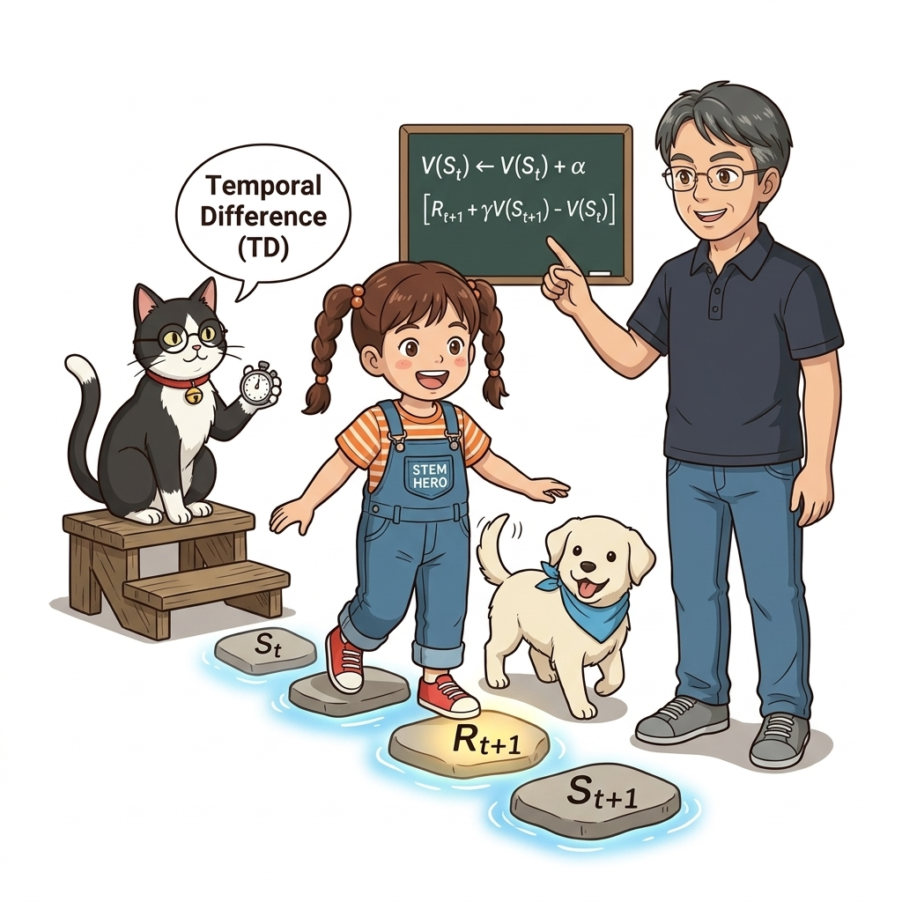
그림 10-1-2 도로시가 징검다리를 한 걸음 내딛자마자 칠판의 점화식 공식을 이용해 즉시 상태 가치 V(s)를 갱신해 주는 지니와 이호진 교수님[강의 스크립트] 화면의 그림을 한번 보시지요. 징검다리를 건너는 상황을 상상해 보십시오. 몬테카를로 방식에서는 저 징검다리를 끝까지 건너서 반대편 언덕에 도달하기 전까지는 내가 방금 밟은 돌이 좋은 돌이었는지 나쁜 돌이었는지 전혀 평가하지 못했습니다. 끝까지 가봐야만 비로소 과거를 돌아보며 점수를 매겼던 것이지요. 하지만 시간차 학습은 다릅니다. 발을 한 걸음 내딛어 다음 돌에 올라서는 순간, 즉각적으로 방금 딛고 일어선 돌의 가치를 갱신합니다. 에피소드가 완결되기를 기다리지 않고 실시간으로 지식을 수정하는 이 직관적인 메커니즘을 오늘 수식으로 하나하나 유도해 볼 것입니다.
- 학습 목표:
- 몬테카를로법(MC)의 한계인 ‘에피소드 완주 대기’와 동적 계획법(DP)의 한계인 ‘환경 모델 의존성’을 극복하는 TD 원리 이해
- 벨만 기대 방정식의 기댓값을 단 1-스텝 샘플로 근사하는 TD(0) 가치 갱신 공식 유도
- TD 목표(TD Target)와 TD 오차(TD Error, δt)의 수학적 구조 및 물리적 의미 파악
- 편향(Bias)과 분산(Variance) 관점에서 MC와 TD의 트레이드오프 분석
- 메모리 버퍼(
memory) 없이 실시간 1-스텝으로 동작하는TdAgent클래스 파이썬 실전 구현
[강의 스크립트] 오늘 강의의 학습 목표 다섯 가지를 명확히 짚고 가겠습니다. 첫째, MC가 가진 치명적인 대기 시간 문제와 DP의 비현실적인 환경 모델 의존성을 시간차 학습이 어떻게 극복하는지 그 원리를 이해해야 합니다. 둘째, 벨만 기대 방정식의 수학적 기댓값을 단 한 번의 행동 결과인 1-스텝 샘플로 대담하게 근사하는 TD(0) 가치 갱신 공식을 직접 유도할 것입니다. 셋째, 이 공식의 양대 기둥인 TD 목표와 TD 오차가 갖는 물리적 의미와 학습 신호로서의 역할을 파악해야 합니다. 넷째, 통계학의 핵심 화두인 편향과 분산의 관점에서 두 알고리즘 간의 트레이드오프를 엄밀하게 비교할 것입니다. 마지막으로, 경험을 누적하는 메모리 버퍼 없이 단 한 번의 호출로 매 스텝 실시간 갱신되는
TdAgent클래스를 파이썬으로 구현해 보겠습니다.
10.1.1 TD법의 탄생: DP와 MC의 위대한 융합
TD법은 지금까지 우리가 배운 ‘몬테카를로법(MC법)’과 ‘동적 프로그래밍(DP법)’의 장점만을 취합하여 합친 기법입니다.
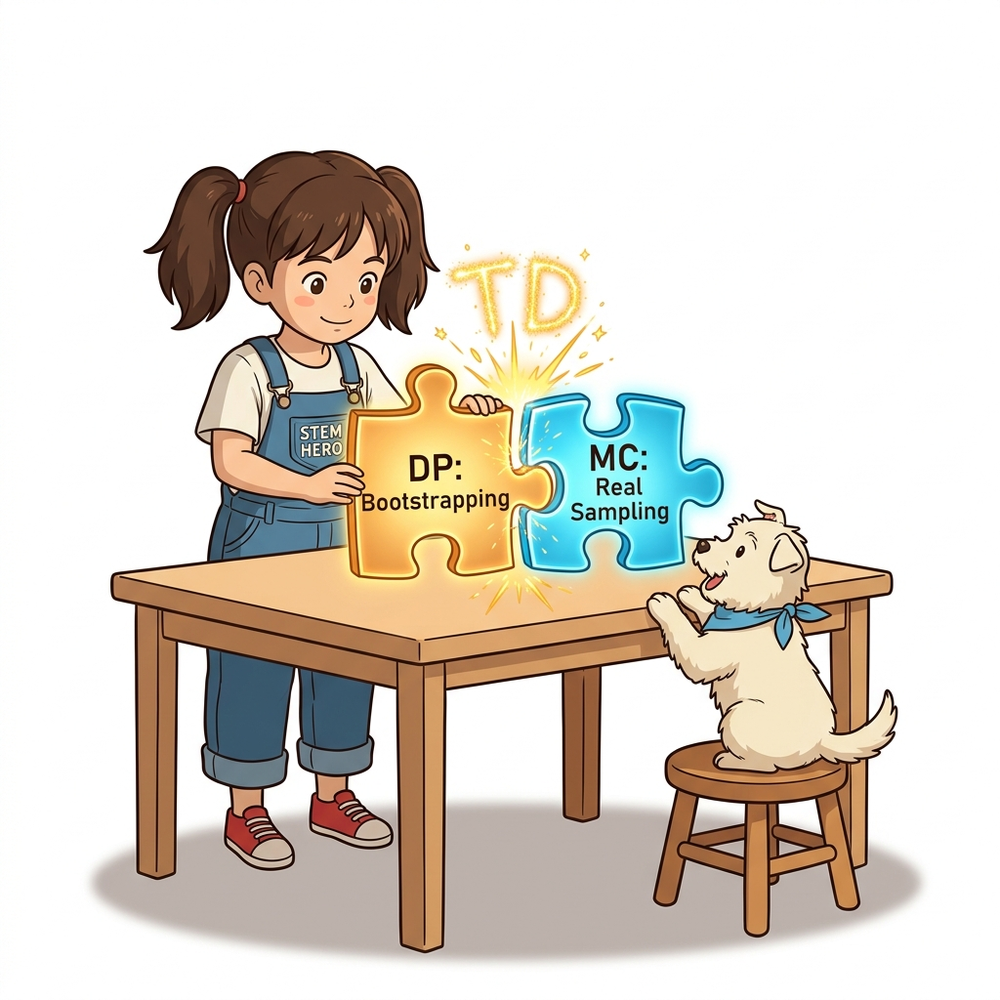
그림 10-1-3 동적 계획법(DP)의 부트스트랩 퍼즐 조각과 몬테카를로법(MC)의 실제 샘플링 퍼즐 조각이 맞물려 TD법의 황금빛 섬광을 일으키는 개념 융합따라서 먼저 이 두 기법의 수학적 뼈대를 복습한 후 TD법을 유도해 보겠습니다.
[강의 스크립트] 시간차 학습을 본격적으로 들어가기에 앞서, 왜 이것을 ‘위대한 융합’이라고 부르는지 그 배경을 이해해야 합니다. 슬라이드의 퍼즐 그림을 보시면, 왼쪽에는 동적 계획법의 ‘부트스트랩’ 조각이 있고, 오른쪽에는 몬테카를로법의 ‘실제 샘플링’ 조각이 있습니다. 완전히 다른 철학을 가진 이 두 조각이 어떻게 정확하게 하나로 맞물릴 수 있는가, 그것을 이해하려면 먼저 우리가 배운 수익의 정의와 상태 가치 함수의 수학적 뼈대를 차분하게 되짚어볼 필요가 있습니다.
1) 수익과 가치 함수의 재귀적 전개
먼저 ‘수익(Return)’의 정의를 복습해 봅시다.
시간 t부터 시작하여 할인율 γ를 적용한 누적 보상의 합은 다음과 같습니다:
Gt = Rt + γRt+1 + γ2Rt+2 + … (식 10.1)
= Rt + γGt+1 (식 10.2: 재귀적 표현)
그림 10-1-4 누적 할인 수익의 재귀적 점화식 $G_t = R_t + \gamma G_{t+1}$의 유도 과정을 칠판에 적어주며 기초를 다져주시는 이호진 교수님
[강의 스크립트] 강화학습의 기초 중의 기초인 수익 $G_t$의 정의를 다시 칠판에 적어보겠습니다. 식 10.1을 보시면, 시점 $t$에서 출발하여 미래로 가면서 할인율 감마($\gamma$)가 차수별로 곱해지는 보상들의 무한 합입니다. 그런데 이 식에서 감마로 두 번째 항부터 묶어내면 어떻게 됩니까? 바로 식 10.2처럼 당장 받는 즉각 보상 $R_t$와 다음 시점의 수익 $G_{t+1}$에 할인율을 곱한 값의 합으로 표현됩니다. 이것이 바로 강화학습을 지탱하는 가장 아름다운 재귀적 표현식입니다.
아름다운 재귀식
시간 t에 에이전트가 행동을 취하여 즉각 보상 Rt를 얻고, 그 이후의 모든 미래 수익을 Gt+1로 묶어 [식 10.2]처럼 아름다운 재귀식으로 나타낼 수 있습니다.
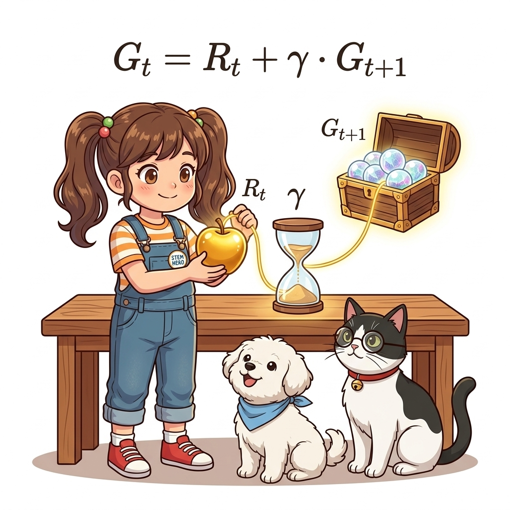
그림 10-1-5 즉각 보상 Rt(황금 사과)와 할인율 γ(모래시계), 미래 누적 수익 Gt+1(보물상자)의 재귀적 연쇄 사슬 구조[강의 스크립트] 그림 10-1-5의 도식을 보십시오. 시점 $t$에서의 총 누적 수익은 저 멀리 있는 보물 상자 전체를 한 번에 열어보는 것이 아닙니다. 지금 내 손에 쥐어지는 사과 한 알, 즉 즉각 보상 $R_t$를 확인하고, 그 뒤에 남은 모든 미래의 수익을 모래시계 감마($\gamma$)로 한 번 할인하여 다음 시점의 보물상자 $G_{t+1}$로 압축해 묶어둔 사슬 구조입니다. 이 단순한 분해가 강화학습의 모든 점화식을 파생시키는 출발점이 됩니다.
상태 가치함수 정의
이 수익을 바탕으로 정책 π를 따를 때의 ‘상태 가치 함수’를 정의하면 다음과 같은 두 가지 형태로 전개됩니다:
vπ(s) = Eπ [Gt | St = s] (식 10.3: 몬테카를로법의 출발점)
= Eπ [Rt + γGt+1 | St = s] (식 10.4: 동적 프로그래밍의 출발점)
가치 함수는 이처럼 기댓값으로 정의됩니다.
그림 10-1-6 상태 가치 함수 $v_\pi(s)$의 기댓값 정의에서 뻗어나오는 두 갈래의 길: 전체 수익의 기댓값(MC)과 재귀적 벨만 전개 기댓값(DP)
[강의 스크립트] 상태 가치 함수 $v_\pi(s)$의 본질은 무엇입니까? 상태 $s$에 서 있을 때 정책 $\pi$를 따라 앞으로 얻게 될 수익 $G_t$의 수학적 기댓값입니다. 그것이 식 10.3입니다. 그런데 방금 우리가 본 재귀식을 대입하면 식 10.4가 됩니다. $R_t + \gamma G_{t+1}$의 조건부 기댓값이 되는 것이지요. 수학적으로 식 10.3과 식 10.4는 정확히 동일한 가치를 나타냅니다. 하지만 강화학습 역사에서 식 10.3을 바라보고 나아간 길이 바로 몬테카를로법이었고, 식 10.4의 재귀적 구조를 파고든 길이 바로 동적 프로그래밍이었습니다. 하나의 뿌리에서 두 갈래의 방법론이 탄생한 셈입니다.
여기서 두 기법이 기댓값을 구하는 방식이 완전히 갈라집니다:
- MC법 (몬테카를로법): [식 10.3]에서 출발하여, 기댓값을 계산하는 대신 실제로 에피소드가 끝날 때까지 뛰어보고 얻은 실제 누적 수익의 샘플 평균으로 근사합니다.
-
DP법 (동적 프로그래밍): [식 10.4]에서 출발하여, 환경의 전이 확률 행렬 p(s’ s, a)를 이용해 벨만 방정식을 통해 모든 가능한 미래의 기댓값을 엄밀하게 계산합니다.
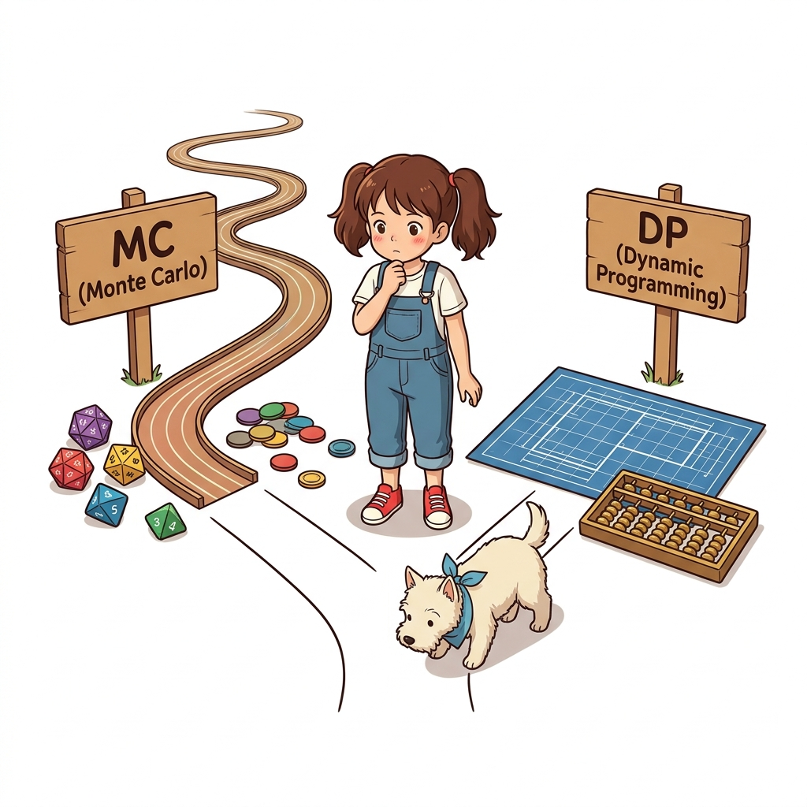
그림 10-1-7 실제 경험 주사위와 트랙으로 근사하는 MC 스테이션과 전이 행렬 청사진으로 엄밀 계산하는 DP 스테이션의 대조[강의 스크립트] 기댓값을 다루는 두 방법의 철학적 차이를 학생 여러분이 반드시 음미해야 합니다. MC는 기댓값을 직접 계산하기를 포기합니다. 대신 큰 수의 법칙을 믿고 주사위를 수없이 던지듯 에피소드를 끝까지 달려본 뒤, 실제로 손에 쥔 반환값들의 표본 평균으로 근사합니다. 모델이 필요 없다는 강력한 자유를 얻는 대신 에피소드 완주라는 대가를 치릅니다. 반면 DP는 환경의 상태 전이 행렬이라는 청사진을 완벽히 손에 쥐고 앉아서, 펜과 종이로 모든 미래의 확률적 가중합을 빈틈없이 닫힌 형식으로 계산해냅니다. 모델에 완벽히 의존하는 방식이지요.
2) MC법과 DP법의 갱신 점화식 복습
두 기법의 가치 갱신식을 나란히 비교해 봅시다:
그림 10-1-8 에피소드 완주 후 누적 참 수익을 쓰는 MC 갱신 카드와 전이 행렬로 가중합을 구하는 DP 갱신 카드를 비교하며 고민하는 도로시와 지니
[강의 스크립트] 자, 이제 두 알고리즘이 상태 가치 테이블 $V(s)$를 구체적으로 어떻게 갱신해 나갔는지 그 점화식을 나란히 칠판에 올려놓고 비교해 보겠습니다. 한쪽은 끝까지 달려본 뒤 참 수익을 손에 쥐고 과거를 돌아보는 카드이고, 다른 한쪽은 전이 확률표를 펼쳐놓고 주변 상태의 가치를 가중 평균하는 카드입니다. 수식의 형태를 차례대로 뜯어봅시다.
MC법의 갱신식 (고정 학습률 α 기반):
Vπ(St) ← Vπ(St) + α · [Gt - Vπ(St)] (식 10.5)
- 에피소드가 완전히 끝난 뒤, 실제로 획득한 참 수익 Gt를 목표(Target)로 삼아 가치를 갱신합니다.
그림 10-1-9 에피소드가 끝까지 완주되어 결승선에 도달할 때까지 모래시계를 보며 하염없이 기다려야만 가치를 갱신할 수 있는 MC법의 지연 특성
[강의 스크립트] 식 10.5를 보십시오. MC의 가치 갱신식입니다. 현재의 가치 추정치 $V(S_t)$에 오차 항인 $[G_t - V(S_t)]$를 학습률 알파($\alpha$)만큼 반영합니다. 여기서 목표치, 즉 타깃(Target) 역할을 하는 것이 바로 $G_t$입니다. 그런데 이 $G_t$가 계산되려면 에이전트가 종료 상태에 도달해 결승선을 밟아야만 합니다. 그림 10-1-9처럼 모래시계가 다 떨어질 때까지, 아무리 긴 에피소드라도 중간에는 가치를 단 0.001도 갱신하지 못하고 멍하니 기다려야 한다는 근본적인 지연 한계가 존재합니다.
DP법의 갱신식 (벨만 기대 방정식 기반):
Vπ(s) ← ∑a, s’ π(a | s) p(s’ | s, a) [r(s, a, s’) + γVπ(s’)] (식 10.6)
- 환경 모델(p, r)을 바탕으로, ‘다음 상태의 추정 가치 Vπ(s’)’를 빌려와서 현재 상태의 가치를 갱신합니다. 이 원리를 부트스트랩(Bootstrapping)이라고 부릅니다.
그림 10-1-10 다음 상태 발판의 추정 가치 $V(S_{t+1})$를 황금 부트스트랩 열쇠로 빌려와 현재 상태 $V(S_t)$를 즉시 계산하는 DP의 가치 갱신 원리
[강의 스크립트] 이번엔 DP의 갱신식인 식 10.6을 보십시오. 여기서는 괄호 안을 주목하셔야 합니다. $r(s, a, s’) + \gamma V_\pi(s’)$가 들어가 있습니다. 에피소드가 끝날 때까지 가지 않습니다. 단 1단계 앞의 다음 상태 가치 추정치인 $V(s’)$를 빌려와서 현재 상태의 가치를 갱신합니다. 이렇게 ‘아직 완벽하지 않은 추정치를 기반으로 또 다른 추정치를 갱신하는 기법’을 전산학에서는 부트스트랩(Bootstrapping)이라고 부릅니다. DP는 부트스트랩 덕분에 에피소드 끝까지 갈 필요가 없었습니다. 하지만 시그마 기호 뒤에 붙은 전이 확률 $p$와 보상 함수 $r$을 완벽히 알아야만 한다는 엄청난 제약이 걸려 있었습니다.
그림으로 두 가지 방식의 갱신 시점을 비교
몬테카를로법(MC)과 시간차 학습(TD)이 상태 가치를 갱신하는 시점을 다이어그램으로 나누어 살펴보면, 왜 두 기법의 학습 속도와 대기 시간에 본질적인 차이가 발생하는지 명쾌하게 파악할 수 있습니다.
① 몬테카를로법 (MC): 에피소드 종료 대기 후 반환값 $ 확정 시 역방향 일괄 갱신
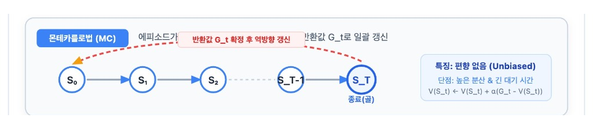
그림 10-1-11 몬테카를로법(MC)의 가치 갱신 시점: 에피소드가 완전히 끝날 때까지 골(Goal) 지점($)까지 도달하기를 기다린 후, 확정된 누적 반환값 이용해 지나온 상태들을 역방향으로 일괄 갱신- 상태 전이 흐름: \rightarrow S_1 \rightarrow S_2 \dots \rightarrow S_{T-1} \rightarrow S_T$
- 갱신 메커니즘: 에피소드가 완전히 끝나는 종료 상태($)에 도달해야만 참 수익 확정할 수 있습니다. 확정된 목표(Target)로 삼아 이전 상태들로 거슬러 올라가며 가치를 한 번에 사후 정산합니다.
- 핵심 특징 및 트레이드오프:
- 장점: 실제 발생한 진짜 누적 보상만을 사용하므로 편향이 전혀 없습니다 (Zero Bias, Unbiased).
- 단점: 에피소드가 끝날 때까지 아무런 가치 갱신도 일어나지 않아 긴 대기 시간이 발생하며, 긴 경로 동안 겪은 모든 무작위 사건들이 누적되어 분산(Variance)이 매우 높습니다.
- 가치 갱신 공식:
V(St) ← V(St) + α · [Gt - V(St)]
[강의 스크립트] 다이어그램을 보면서 두 기법의 갱신 시점을 명확히 비교해 보겠습니다. 먼저 몬테카를로법입니다. 상태 $S_0$에서 출발하여 $S_1, S_2$를 거쳐 마침내 종료 상태 $S_T$에 도달합니다. 이 긴 경로 동안 에이전트는 아무런 가치 수정도 하지 못합니다. 골인 지점에 도달해서 실제 반환값 $G_t$가 온전히 확정된 뒤에야, 지나온 궤적을 역방향으로 거슬러 올라가며 한 번에 사후 정산합니다. 순수한 실제 보상들만 합산했기 때문에 기댓값의 관점에서 편향(Bias)이 전혀 없다는 통계학적 장점이 있지만, 그 긴 경로 동안 발생한 모든 확률적 우연이 누적되어 분산(Variance)이 극도로 치솟는 치명적인 약점이 생깁니다.
② 시간차 학습 (TD(0)): 1-스텝 이동 직후 부트스트랩 즉시 갱신
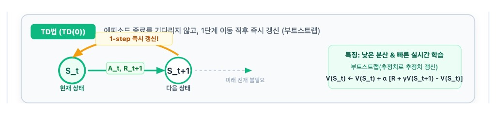
그림 10-1-12 시간차 학습(TD(0))의 가치 갱신 시점: 에피소드 종료를 기다리지 않고, 1단계 행동 직후 관측된 보상과 다음 상태 가치 추정치 (S_{t+1}) 현재 상태 가치를 즉시 갱신 (미래 전개 불필요)- 상태 전이 흐름: \xrightarrow{A_t, R_{t+1}} S_{t+1}$ (미래 궤적 전개 불필요)
- 갱신 메커니즘: 단 1단계 행동($)을 취해 즉각 보상 {t+1} 받고 다음 상태 {t+1} 도달하자마자, 아직 가보지 않은 미래를 기다리지 않고 다음 상태의 현재 추정 가치 (S_{t+1}) 빌려와(Bootstrapping) 현재 상태 가치를 실시간으로 즉시 갱신합니다.
- 핵심 특징 및 트레이드오프:
- 장점: 단 1스텝 뒤의 결과만을 반영하므로 무작위성이 적게 개입하여 분산이 매우 낮고(Low Variance), 에피소드가 끝나지 않는 지속적 과제에서도 즉각적인 온라인 실시간 학습이 가능합니다.
- 단점: 아직 참값이 아닌 추정치 (S_{t+1}) 바탕으로 갱신하므로 학습 초기에 약간의 편향(Bias)이 존재합니다 (학습이 반복될수록 참값으로 수렴하여 소멸).
- 가치 갱신 공식:
V(St) ← V(St) + α · [Rt+1 + γV(St+1) - V(St)]
[강의 스크립트] 반면에 시간차 학습, 즉 TD(0)의 다이어그램을 보십시오. 미래의 긴 궤적 따위는 신경 쓸 필요가 없습니다. 상태 $S_t$에서 행동 하나를 취해 즉각 보상 $R_{t+1}$을 얻고 다음 상태 $S_{t+1}$에 발을 딛는 그 순간, 갱신이 일어납니다. 아직 가보지 않은 $S_{t+2}$ 이후의 미래는 그냥 현재 시점의 추정 가치 $V(S_{t+1})$를 빌려와서 때웁니다. 단 1스텝의 확률적 사건만 관여하므로 우연의 개입이 적어 분산이 대단히 낮습니다. 그리고 에피소드가 영원히 끝나지 않는 지속적 과제에서도 매 틱마다 즉각적인 실시간 학습이 가능해집니다. 물론 학습 초기에는 아직 부정확한 $V(S_{t+1})$를 쓰기 때문에 약간의 편향이 발생하지만, 이는 학습이 진행되면서 자연스럽게 소멸합니다.
3) 갱신 시점과 백업 흐름의 본질적 차이
몬테카를로법(MC)과 시간차 학습(TD)의 백업 흐름을 각각 징검다리 경로 그림으로 나누어 살펴보면, 가치 갱신이 일어나는 시점과 메커니즘의 결정적 차이를 선명하게 파악할 수 있습니다.
① 몬테카를로법(MC)의 백업 흐름: 에피소드 완주 후 역방향 지연 갱신
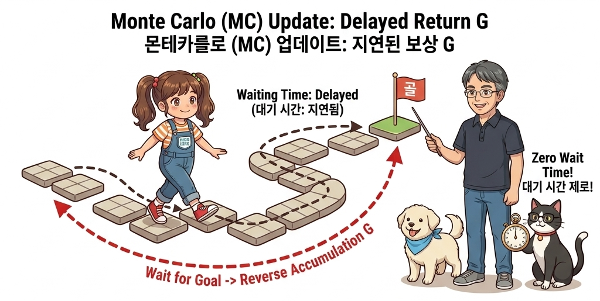
그림 10-1-13 몬테카를로법(MC)의 백업 흐름: 에피소드가 끝날 때까지 골인(Goal) 지점까지 완주한 후, 전체 경로를 역방향으로 거슬러 올라가며 가치를 지연 갱신 (대기 시간 발생)- 에이전트 도로시가 출발점에서 출발하여 최종 골(Goal) 깃발에 도달할 때까지 가치는 전혀 갱신되지 않습니다.
- 에피소드가 끝난 뒤에야 비로소 실제로 획득한 보상들의 총합(수익 $)을 바탕으로, 지나온 발판들을 거꾸로 거슬러 올라가며 가치를 한 번에 사후 정산합니다.
[강의 스크립트] 징검다리 도해를 통해 두 기법의 정보 흐름, 즉 백업(Backup) 방향을 직관적으로 살펴보겠습니다. MC의 백업 흐름을 보십시오. 도로시가 출발 발판을 떠나 중간 징검다리들을 수없이 건너 최종 골 깃발에 안착할 때까지, 발판 밑에 적힌 가치 숫자는 아무런 변화가 없습니다. 결승점에 도달해서 획득한 총수익 $G$를 품에 안은 뒤에야, 뒤로 돌아서서 지나온 발판들을 하나하나 거꾸로 짚어가며 사후에 가치를 정산합니다. 전형적인 회고적, 지연 갱신 방식입니다.
② 시간차 학습(TD)의 백업 흐름: 1-스텝 이동 즉시 부트스트랩 갱신
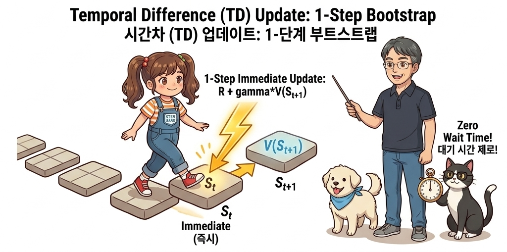
그림 10-1-14 시간차 학습(TD)의 백업 흐름: 단 1걸음 이동 직후 다음 상태의 추정 가치 (S_{t+1}) 빌려와 번개(⚡)처럼 즉시 현재 발판 갱신 (대기 시간 제로!)- 에이전트 도로시가 발판 다음 발판 {t+1} 단 한 걸음 내딛자마자, 즉시 보상 다음 상태의 가치 (S_{t+1}) 이용해 가치를 실시간으로 갱신합니다.
- 에피소드가 끝나기를 기다릴 필요가 전혀 없으므로 대기 시간이 0(Zero Wait Time)이며, 메모리 버퍼 없이 극도로 가볍고 기민하게 학습이 진행됩니다.
[강의 스크립트] 이번엔 TD의 백업 흐름을 보십시오. 번개 표시가 보이시지요? 도로시가 현재 발판에서 다음 발판으로 단 한 걸음 내딛자마자, 즉각 얻은 보상과 새로 도착한 발판에 적혀 있는 가치를 읽어서 방금 떠나온 발판의 가치를 번개처럼 그 자리에서 고쳐 씁니다. 결승선이 어디 있는지, 이 모험이 언제 끝나는지 기다릴 필요가 전혀 없습니다. 대기 시간은 정확히 제로이며, 지나온 궤적을 일일이 기억해 둘 메모리 버퍼조차 필요하지 않습니다.
[그림 10-1-11]부터 [그림 10-1-14]까지의 갱신 시점과 백업 흐름을 종합 비교해 보면 각 기법의 장단점이 극명하게 드러납니다:
- DP법: 환경 지도를 완벽히 알고 있으므로 모든 경로를 수학적으로 계산할 수 있지만, 지도가 없는 실세계에서는 아예 사용할 수 없습니다.
- MC법: 환경 지도가 없어도 실제 샘플 경험으로 학습할 수 있지만, 에피소드가 끝날 때까지 하염없이 기다려야만 합니다.
- TD법: 환경 지도 없이 오직 1걸음 실제 경험만으로 학습하면서도, 에피소드 완주를 기다리지 않고 매 순간 실시간으로 가치를 갱신합니다.
[강의 스크립트] 지금까지 살펴본 세 가지 방법론의 장단점을 종합적으로 정리해 보겠습니다. 동적 계획법은 완벽한 환경 지도가 있을 때는 더할 나위 없이 우아하지만, 지도가 없는 실세계에서는 아예 가동조차 할 수 없는 상아탑의 기법입니다. 몬테카를로법은 지도가 없어도 부딪히며 배울 수 있지만, 매번 에피소드가 끝나기를 하염없이 기다려야 하므로 실시간 반응성이 떨어집니다. 그리고 오늘 우리가 만난 TD법은 지도가 없는 실세계에서 오직 단 1걸음의 실제 경험만으로 학습하면서도, 에피소드 완주를 기다리지 않고 매 순간 실시간으로 지식을 갱신합니다. 가장 실용적이고 강력한 특성을 모두 갖춘 것입니다.
4) 하이브리드의 탄생: DP의 부트스트랩 + MC의 샘플링
이 두 기법의 장점만을 뽑아내면 어떨까요?
“환경 모델 없이 오직 실제 1걸음 샘플 데이터만으로 학습(MC의 장점)하면서도, 에피소드 완주를 기다리지 않고 다음 상태의 가치를 빌려와 즉시 갱신(DP의 부트스트랩 장점)하자!”
그림 10-1-15 DP의 황금 부트스트랩 열쇠와 MC의 경험 나침반이 융합하여 탄생한 시간차 학습(TD)의 탄생
[강의 스크립트] 강화학습 연구자들은 여기서 대단히 영리한 질문을 던졌습니다. “환경 모델 없이 직접 겪어본 샘플 데이터로 학습하는 MC의 경험 나침반을 취하고, 에피소드 끝까지 가지 않고 다음 상태를 빌려 쓰는 DP의 황금 부트스트랩 열쇠를 결합하면 어떨까?” 바로 이 단순하면서도 비범한 착상이 시간차 학습이라는 위대한 하이브리드 기법을 낳았습니다.
TD 탄생 배경
이것이 바로 시간차 학습(TD법, Temporal Difference Learning)의 위대한 탄생 배경입니다!
- 모델이 없어도 학습할 수 있는 모델 프리(Model-Free) 속성을 유지하면서,
- 에피소드가 끝날 때까지 기다리지 않고 매 스텝 즉시 가치를 갱신하는 온라인 실시간 갱신(Online Real-time Update)을 완벽히 실현합니다.
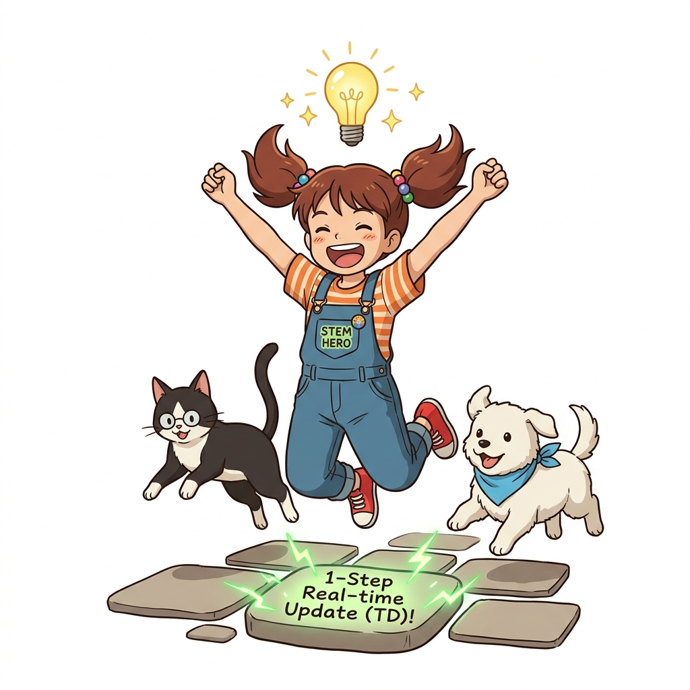
그림 10-1-16 한 걸음 딛자마자 번개처럼 실시간 가치 갱신이 일어나는 TD 학습의 기적을 발견하고 환호하는 도로시와 지니, 토토[강의 스크립트] TD법이 인공지능 연구자들에게 안겨준 유레카의 전율이 바로 여기에 있습니다. 복잡한 환경 모델을 수학적으로 모델링할 필요가 없는 완벽한 모델 프리(Model-Free)의 자유를 누리면서도, 에이전트가 환경 속에서 살아 숨 쉬며 한 걸음 내딛을 때마다 즉시 가치를 수정하는 온라인 실시간 갱신(Online Real-time Update)을 동시에 실현해 낸 것입니다. 이제 이 매력적인 아이디어가 어떻게 엄밀한 수학 공식으로 유도되는지 유도 과정을 함께 살펴보겠습니다.
5) TD법의 수식 도출: 단 1스텝 샘플에 의한 기댓값 근사
DP법의 벨만 방정식 [식 10.6]을 기댓값 형태로 다시 표현해 봅시다:
vπ(s) = Eπ [Rt + γvπ(St+1) | St = s] (식 10.7)
[강의 스크립트] 수식 유도의 첫 단추입니다. 식 10.7을 보십시오. 벨만 기대 방정식의 기댓값 표현입니다. 상태 $s$에서의 가치 $v_\pi(s)$는, 즉각 보상 $R_t$와 다음 상태의 할인된 가치 $\gamma v_\pi(S_{t+1})$라는 확률변수의 기댓값과 같습니다. 통계학적으로 기댓값 기호 $\mathbb{E}$ 안에는 무한히 많은 가능한 미래 사건들의 확률적 가중합이 압축되어 있습니다.
| DP법은 모든 가능한 전이 확률 p(s’ | s, a)를 알고 있어야만 이 기댓값을 연립방정식 가중합으로 풀 수 있었습니다. |
그림 10-1-17 복잡한 실세계 환경 지도가 찢겨져 물음표로 가려졌을 때 전이 확률 행렬을 구할 수 없어 멈춰 서는 DP법의 치명적 한계
[강의 스크립트] 왜 DP는 실세계에서 좌절할 수밖에 없었을까요? 기댓값 $\mathbb{E}[X] = \sum x \cdot p(x)$를 엄밀히 계산하려면 확률 분포 $p(x)$를 알아야 합니다. 즉, 상태 $s$에서 행동 $a$를 취했을 때 상태 $s’$로 이동할 전이 확률 $p(s’|s, a)$ 행렬을 완벽하게 쥐고 있어야만 저 기댓값을 계산할 수 있었던 것입니다. 그러나 현실의 로봇 제어나 금융 시장에서 완벽한 전이 확률 행렬을 아는 것은 불가능합니다. 그림처럼 지도가 찢겨 나가는 순간 DP의 계산기는 그대로 멈춰 서게 됩니다.
반면 TD법은 실제로 한 걸음 이동하여 관측된 단 하나의 샘플 데이터 (Rt, St+1)로 이 기댓값을 대담하게 근사합니다!
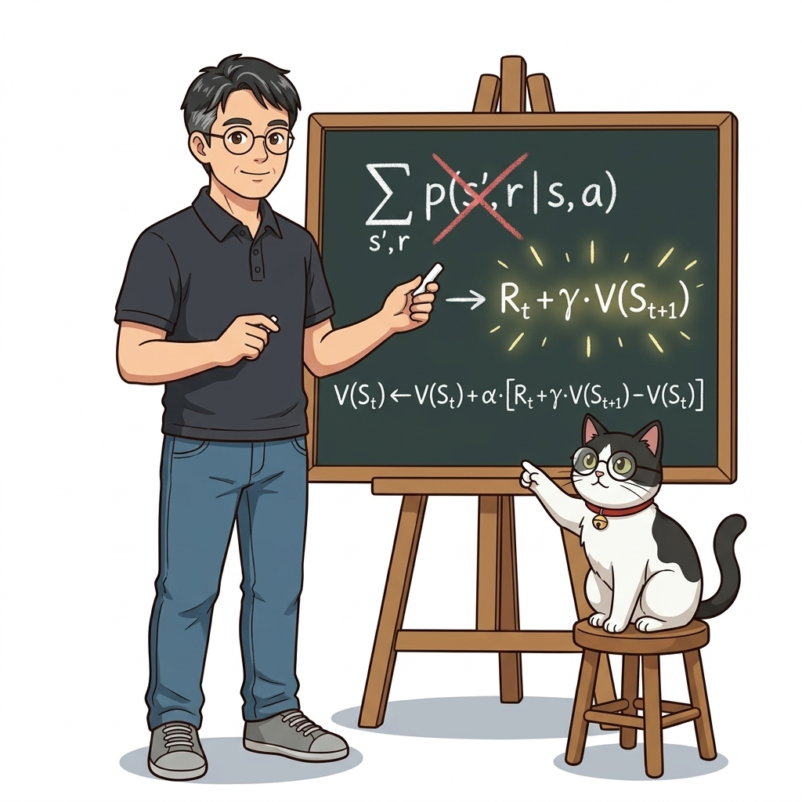
그림 10-1-18 DP의 거대한 전수조사 합 기호(∑)를 소거하고 단 1스텝 관측치 Rt + γV(St+1)로 대담하게 근사하는 TD(0) 유도 칠판 강의[강의 스크립트] 여기서 TD법의 대담한 수학적 결단이 등장합니다. 칠판을 보십시오. DP가 풀려고 끙끙 앓던 저 거대한 전수조사 시그마($\sum$) 합 기호와 전이 확률 행렬을 과감하게 지워버립니다. 그리고 에이전트가 실제로 행동하여 환경으로부터 관측한 단 하나의 1스텝 샘플, 즉 실제로 얻은 보상 $R_t$와 실제로 도착한 다음 상태 $S_{t+1}$의 가치 $R_t + \gamma V(S_{t+1})$로 저 거대한 기댓값을 단칼에 근사해 버립니다. 단 한 번의 관측치를 기댓값의 표본으로 삼는 대담한 샘플링 근사입니다.
이 샘플 근사를 가치 갱신 점화식에 대입하면, 마침내 TD(0) 가치 갱신 공식이 유도됩니다:
Vπ(St) ← Vπ(St) + α · [Rt + γVπ(St+1) - Vπ(St)] (식 10.8: TD 정책 평가 공식)
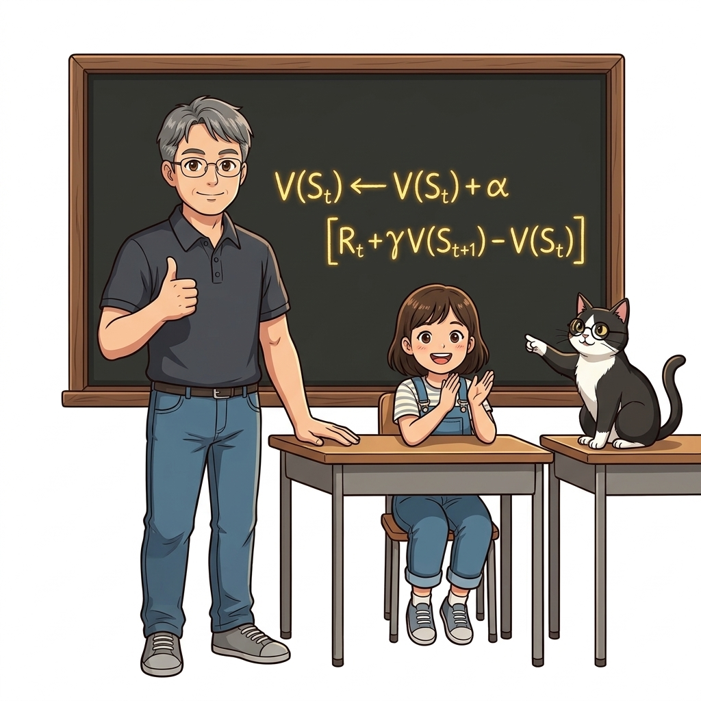
그림 10-1-19 칠판에 황금빛으로 빛나는 TD(0) 가치 갱신 공식 [식 10.8]을 열강하시는 이호진 교수님과 열정적으로 호응하는 도로시[강의 스크립트] 마침내 화면에 보이는 식 10.8이 도출되었습니다. 강화학습의 모든 교과서에서 가장 중요한 단 하나의 공식을 꼽으라면 주저 없이 선택되는 TD(0) 가치 갱신 공식입니다. 좌변의 새로운 가치 추정치는, 우변의 기존 가치 추정치 $V(S_t)$에 학습률 알파($\alpha$)를 곱한 보정항을 더해 완성됩니다. 대괄호 안을 보십시오. $R_t + \gamma V(S_{t+1}) - V(S_t)$입니다. 이 공식의 내부가 어떤 기하학적, 물리적 구조를 띠고 있는지 다음 슬라이드에서 현미경으로 관찰해 보겠습니다.
6) TD 공식의 3대 핵심 기둥: 현재 예측, TD 목표, TD 오차
[식 10.8]의 구조를 돋보기로 들여다보면 3개의 핵심 요소가 들어 있습니다:
| 핵심 구성 요소 | 수학 표현식 | 물리적 의미 및 역할 |
|---|---|---|
| 현재 추정치 | Vπ(St) | 현재 상태 St에 대해 에이전트가 지금까지 예상하고 있던 가치 |
| TD 목표 (TD Target) | Rt + γVπ(St+1) | 실제로 얻은 보상 Rt와 다음 상태의 추정 가치 γVπ(St+1)를 합친 새로운 목표 기준점 |
| TD 오차 (TD Error, δt) | Rt + γVπ(St+1) - Vπ(St) | 새로운 기준점(목표)과 기존 예측 사이의 차이 (학습의 나침반 역할) |
[강의 스크립트] 식 10.8을 구성하는 3대 핵심 기둥을 표로 정리했습니다. 머릿속에 반드시 새겨두셔야 합니다. 첫째, $V(S_t)$는 에이전트가 지금까지 믿고 있던 ‘현재의 예측치’입니다. 둘째, $R_t + \gamma V(S_{t+1})$는 1보 전진하여 얻은 실제 보상과 다음 상태 가치를 더한 ‘TD 목표(TD Target)’입니다. 내가 향해야 할 새로운 깃발이지요. 셋째, 이 새로운 목표에서 기존 예측치를 뺀 차이를 우리는 그리스 문자 델타($\delta_t$), 즉 ‘TD 오차(TD Error)’라고 부릅니다. 이 오차가 바로 에이전트가 지식을 어느 방향으로 얼마나 수정해야 하는지 알려주는 학습의 나침반 역할을 합니다.
도로시가 현재 예상하는 가치 상자 V(St)를, 한 걸음 걷고 발견한 더 믿을 만한 기준 상자인 Rt + γV(St+1) (TD 목표)에 맞추려고 합니다.
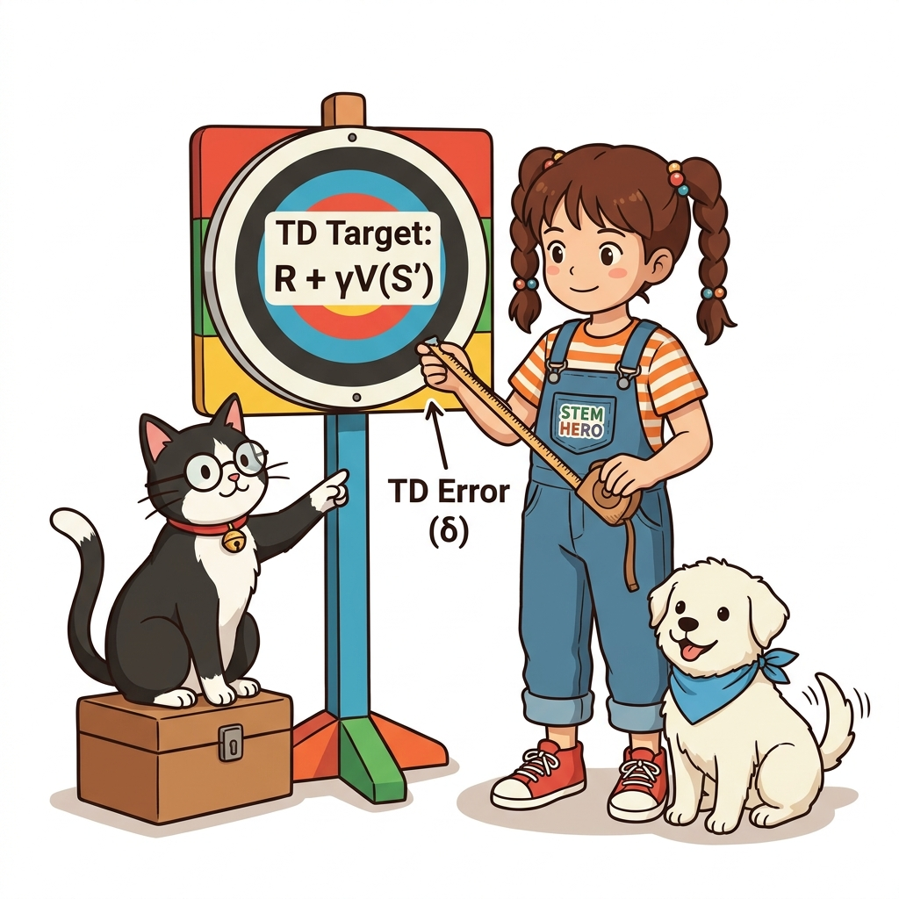
그림 10-1-20 과녁판의 TD 목표(R + γV(S’))와 현재 예측 상자 사이의 간격인 TD 오차(δ)를 줄자로 정밀 측정하는 도로시와 지니두 상자의 차이인 TD 오차(δt)를 측정한 뒤, 학습 속도를 제어하는 다이얼인 학습률 α만큼만 살짝 그 방향으로 당겨주어 가치를 실시간으로 보정해 나가는 것입니다!
[강의 스크립트] 그림 10-1-20을 보십시오. 도로시가 원래 들고 있던 가치 상자 $V(S_t)$가 있습니다. 그런데 한 발자국 걸어보았더니 실제로 사과 $R_t$를 얻었고 다음 발판의 가치 $\gamma V(S_{t+1})$를 확인했습니다. 한 발짝 걸어보고 얻은 이 TD 목표 상자가 원래 들고 있던 상자보다 훨씬 신뢰할 수 있는 최신 정보입니다. 따라서 둘 사이의 간격인 TD 오차 $\delta_t$를 측정하고, 학습률 다이얼 알파($\alpha$)만큼만 현재 상자를 목표 상자 쪽으로 부드럽게 당겨주는 것입니다. 한 번에 확 바꾸지 않고 알파만큼 조금씩 당겨주어야 여러 경로의 경험이 통계적으로 누적되며 참값으로 수렴하게 됩니다.
7) TD(0)의 백업 다이어그램
백업 다이어그램은 강화학습 알고리즘의 갱신 구조를 시각화한 트리 구조입니다:
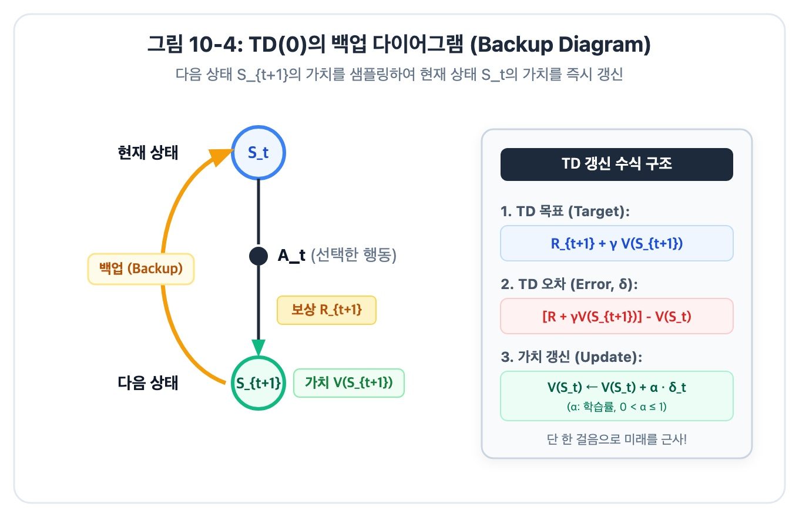
그림 10-1-21 TD(0)의 백업 다이어그램 (Backup Diagram): 다음 상태 St+1의 가치를 샘플링하여 현재 상태 St의 가치를 즉시 백업[강의 스크립트] 강화학습의 거장 리처드 서튼 교수가 고안한 ‘백업 다이어그램(Backup Diagram)’을 보겠습니다. 알고리즘이 상태 공간 트리에서 정보를 어떤 경로로 끌어올리는지 그 기하학적 형태를 한눈에 보여주는 다이어그램입니다. 화면의 그림 10-1-21을 보시면, 맨 위에 속이 빈 흰색 원이 하나 있고, 가지를 하나 뻗어 검은색 점을 거쳐 아래쪽의 흰색 원으로 연결됩니다. 이 단순한 구조가 무엇을 뜻하는지 다음 슬라이드에서 상세히 짚어보겠습니다.
- 현재 상태 St (빈 원)에서 행동 하나를 취합니다.
- 행동 결과 즉각 보상 Rt를 받고 다음 상태 St+1에 도달합니다.
- 에피소드 끝까지 내려가지 않고, 오직 1스텝 아래의 St+1 가치만을 빌려와서 현재 상태 St로 즉시 되돌려 보냅니다(Backup).
- 이처럼 단 1스텝 앞만 바라보고 즉시 갱신하는 방식을 TD(0) 또는 1-스텝 TD라고 부릅니다.
[강의 스크립트] 백업 다이어그램의 요소를 하나씩 분석해 봅시다. 맨 위의 빈 원은 현재 상태 $S_t$입니다. 여기서 에이전트는 행동을 취합니다. 그 행동 선택 지점이 검은 점입니다. 행동을 취한 결과 환경으로부터 즉각 보상 $R_t$를 받고 다음 상태인 아래쪽 빈 원 $S_{t+1}$에 도달합니다. 여기서 멈춥니다. 더 밑으로 내려가지 않습니다. 오직 바로 아래에 있는 $S_{t+1}$의 가치만을 샘플링하여 위쪽의 현재 상태 $S_t$로 즉시 되돌려 보냅니다(Backup). 깊이 방향으로 단 1단계만 내려갔다 온다고 해서 이것을 1-스텝 TD, 혹은 공식 명칭으로 TD(0)라고 부르는 것입니다.
10.1.2 MC법과 TD법의 심층 비교: 편향과 분산의 트레이드오프
환경 모델을 전혀 모를 때, 우리는 MC법과 TD법 중 무엇을 선택해야 할까요?
그림 10-1-22 저울의 양쪽에 MC(무편향 고분산)와 TD(저분산 신속수렴)를 올려놓고 어떤 알고리즘을 선택할지 저울질하는 도로시
[강의 스크립트] 이제 우리는 매우 본질적인 공학적 질문과 마주하게 됩니다. 환경 모델을 모를 때, 과연 MC와 TD 중 어떤 알고리즘을 선택해야 하는가? 저울의 한쪽에는 ‘무편향이지만 고분산’인 MC가 놓여 있고, 다른 한쪽에는 ‘초기 편향이 있지만 저분산으로 신속히 수렴’하는 TD가 놓여 있습니다. 이것은 머신러닝 전체를 관통하는 가장 위대한 주제인 ‘편향과 분산의 트레이드오프(Bias-Variance Tradeoff)’ 문제입니다. 두 기법을 학술적으로 엄밀하게 저울질해 보겠습니다.
두 기법의 특성을 체계적으로 비교해 봅시다.
| 비교 기준 | 🎲 몬테카를로법 (MC) | ⚡ 시간차 학습 (TD) |
|---|---|---|
| 갱신 공식 | V(St) ← V(St) + α[Gt - V(St)] | V(St) ← V(St) + α[Rt + γV(St+1) - V(St)] |
| 갱신 목표 (Target) | 에피소드 완주 후 누적 참 수익 Gt | 1-스텝 보상 + 다음 가치 Rt + γV(St+1) |
| 갱신 시점 | 에피소드 종료 시점 (지연 갱신) | 매 타임스텝 즉시 (실시간 1-Step 갱신) |
| 적용 과제 | 일회성 과제(Episodic)만 가능 | 일회성 과제 및 영구 지속 과제(Continuing) 모두 가능 |
| 편향 (Bias) | 편향 없음 (Zero Bias, 완벽한 무편향) | 초기 편향 존재 (부트스트랩 추정치 V를 사용하므로) |
| 분산 (Variance) | 매우 높음 (High Variance) | 매우 낮음 (Low Variance, 안정적) |
| 학습 속도 | 분산이 커서 수많은 에피소드 표본 필요 | 실제 대부분의 환경에서 훨씬 빠르고 안정적으로 수렴 |
[강의 스크립트] 슬라이드의 비교표를 꼼꼼하게 대조해 보십시오. 갱신 목표를 보면 MC는 완주 후 누적 참 수익 $G_t$를 쓰고, TD는 1스텝 보상과 다음 상태 가치의 합을 씁니다. 적용 과제 측면을 보십시오. 종료가 없는 공장 제어나 자율주행 같은 영구 지속 과제(Continuing Tasks)에서 MC는 아예 적용이 불가능합니다. 에피소드가 끝나지 않으니 $G_t$를 영원히 얻을 수 없기 때문입니다. 반면 TD는 매 스텝 즉시 갱신하므로 아무런 제약 없이 작동합니다. 그리고 가장 핵심적인 차이인 편향과 분산입니다. MC는 가공되지 않은 진짜 보상만 썼으니 편향이 0이지만 분산이 극도로 높습니다. 반면 TD는 부트스트랩 추정치를 쓰므로 초기 편향이 있지만 분산이 극도로 낮습니다. 왜 분산의 차이가 발생하는지 계속해서 살펴보겠습니다.
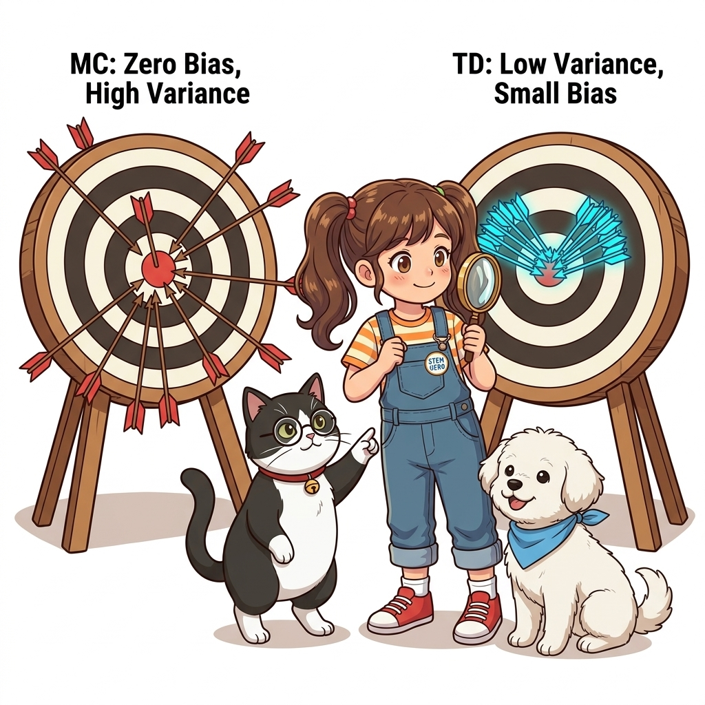
그림 10-1-23 편향(조준 오차)과 분산(탄착군 퍼짐도)의 양궁 과녁 비교: MC(무편향 + 고분산) vs TD(약간의 초기 편향 + 초저분산)[강의 스크립트] 통계학에서 편향과 분산을 설명할 때 단골로 쓰이는 양궁 과녁판 그림을 보십시오. 왼쪽 과녁이 MC입니다. 화살들의 평균 중심, 즉 무게중심은 정확히 10점 정중앙에 위치합니다. 그래서 ‘무편향(Unbiased)’입니다. 하지만 화살들이 과녁 전체로 넓게 퍼져 있습니다. 탄착군의 흩어짐, 즉 ‘분산’이 매우 큽니다. 반면 오른쪽 TD를 보십시오. 화살들이 10점 정중앙에서 살짝 오른쪽 위로 쏠려 있습니다. 이것이 ‘초기 편향’입니다. 하지만 화살들이 한 점에 빽빽하게 모여 있습니다. ‘극도로 낮은 분산’을 가집니다. 그리고 학습이 거듭될수록 저 탄착군 덩어리 자체가 스르륵 중앙 10점으로 이동하게 됩니다.
1) 왜 MC법은 분산이 크고, TD법은 분산이 작을까요?
운전자가 안개 낀 고속도로를 달리는 상황을 상상해 보십시오.
 그림 10-1-24 안개 낀 도로 주행 비유: 1시간 장기 항해의 요동치는 궤적(MC 고분산) vs 1초 전조등 앞길의 안정적인 직진(TD 저분산)
그림 10-1-24 안개 낀 도로 주행 비유: 1시간 장기 항해의 요동치는 궤적(MC 고분산) vs 1초 전조등 앞길의 안정적인 직진(TD 저분산)
[강의 스크립트] 왜 MC는 분산이 크고 TD는 분산이 작을까요? 여러분이 짙은 안개가 낀 야간 고속도로를 운전하고 있다고 상상해 보십시오. 저 멀리 50km 떨어진 목적지까지 앞으로 1시간 동안 어떤 일이 벌어질지 예측하는 것과, 당장 내 차 전조등이 비추고 있는 바로 앞 10미터의 안전을 살피는 것 중 어느 쪽이 더 불확실하고 변동성이 심하겠습니까?
- MC법의 목표 Gt:
- 운전자가 10분, 1시간 동안 핸들을 이리저리 꺾으며 수없이 마주친 무작위 돌발 상황들의 결과가 꼬리에 꼬리를 물고 누적된 값입니다.
- 경로가 길어질수록 운이나 우연의 개입이 심해져 값의 출렁임(분산)이 극도로 커집니다.
그림 10-1-25 수많은 불확실한 돌발 상황과 우연의 주사위가 꼬리를 물며 누적되어 극심하게 요동치는 MC의 고분산 롤러코스터
[강의 스크립트] MC의 목표 $G_t$는 시점 $t$부터 에피소드 끝까지 나오는 모든 보상의 합입니다: $R_t + \gamma R_{t+1} + \gamma^2 R_{t+2} + \dots$ 이 긴 경로 동안 에이전트는 무작위 행동 선택과 환경의 무작위 전이라는 수많은 주사위를 수십 번, 수백 번 연속해서 굴려야 합니다. 중간에 돌발 상황이 한 번만 터져도 최종 반환값은 롤러코스터처럼 천장을 쳤다가 바닥으로 곤두박질칩니다. 수학적으로 독립적인 확률변수들의 합은 분산의 합과 같으므로, 경로가 길어질수록 분산은 통제 불가능할 정도로 폭발하게 됩니다.
- TD법의 목표 Rt + γV(St+1):
- 방금 지나간 단 1초(1스텝) 동안의 결과만을 바탕으로 계산합니다.
- 단 1단계 앞의 사건만 반영하므로 무작위성이 적게 개입하여 값의 출렁임(분산)이 매우 작고 안정적입니다.
그림 10-1-26 단 한 걸음 앞의 확실한 발판만을 밝히며 극도의 안정성과 저분산으로 직진하는 TD법의 전조등 효과
[강의 스크립트] 반면에 TD의 목표인 $R_t + \gamma V(S_{t+1})$를 보십시오. 확률적 사건이 개입하는 구간은 오직 방금 지나간 단 1초, 즉 1스텝뿐입니다. 행동 하나 취해서 보상 $R_t$ 받고 상태 $S_{t+1}$로 옮겨간 그 찰나의 순간만 확률이 개입합니다. 그 뒤에 펼쳐질 수백 번의 미래 불확실성은 이미 계산되어 테이블에 적혀 있는 단 하나의 확정된 스칼라 값 $V(S_{t+1})$로 깔끔하게 압축해 버렸습니다. 전조등이 비추는 1보 앞만 보고 나아가니 무작위성이 끼어들 틈이 없어 분산이 대단히 작고 안정적인 것입니다.
2) 편향(Bias)의 차이와 신속한 수렴
다음으로 편향(Bias)의 차이를 살펴봅시다. 편향이란 에이전트의 추정치가 참값으로부터 구조적으로 얼마나 치우쳐 있는가를 나타냅니다.
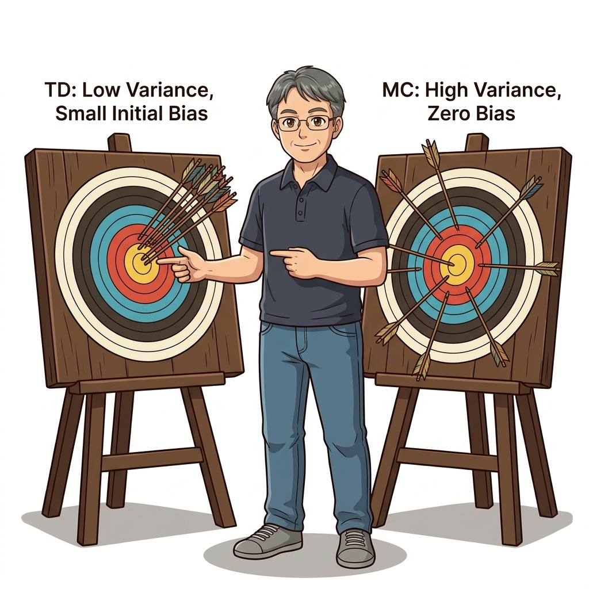
그림 10-1-27 과녁판을 통해 영점 오차(편향)와 탄착군 산포도(분산)의 통계적 차이를 도로시에게 쉽게 풀어주시는 이호진 교수님[강의 스크립트] 이제 편향의 문제를 짚어보겠습니다. 통계학에서 어떤 추정량 $\hat{\theta}$의 편향(Bias)이란, 추정량의 기댓값과 실제 모수 $\theta$ 사이의 차이로 정의됩니다: $\text{Bias}(\hat{\theta}) = \mathbb{E}[\hat{\theta}] - \theta$ 즉, 수없이 많은 표본을 뽑았을 때 평균적으로 참값에 정확히 도달하는가, 아니면 구조적으로 한쪽으로 빗겨 나가 있는가를 따지는 것입니다.
- MC법: 실제 발생한 진짜 보상들의 누적 합 Gt만을 온전히 사용하므로, 어떠한 가짜 추정치도 섞이지 않아 수학적으로 편향이 0(Unbiased)입니다.
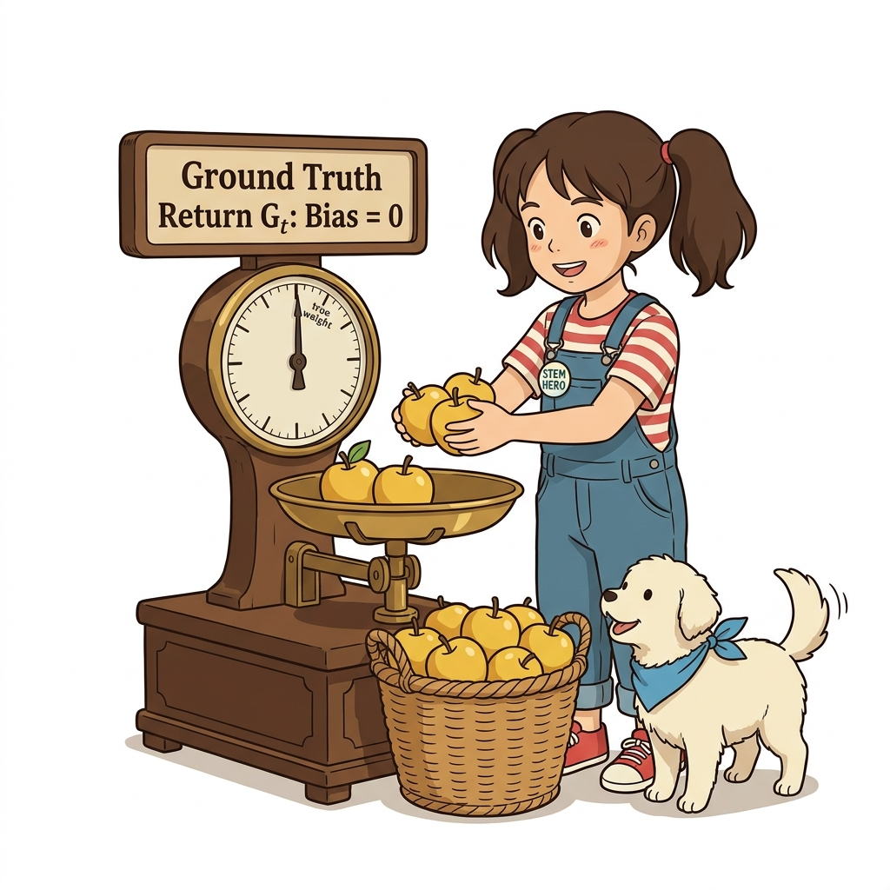
그림 10-1-28 실제 수확한 진짜 황금 사과를 저울에 달아 어떠한 가공이나 추정도 섞이지 않은 100% 무편향 참 수익 G_t를 달아보는 도로시[강의 스크립트] MC법의 수학적 순수성이 바로 여기에 있습니다. 상태 가치 함수의 정의 자체가 $v_\pi(s) = \mathbb{E}[G_t | S_t = s]$였습니다. 그리고 MC가 타깃으로 삼는 값은 실제로 획득한 진짜 $G_t$ 그 자체입니다. 어떠한 중간 추정치나 인위적인 왜곡도 섞이지 않았기 때문에, $G_t$의 기댓값은 정확하게 참 가치 $v_\pi(s)$와 일치합니다. 편향이 수학적으로 완벽한 0, 즉 ‘비편향 추정량(Unbiased Estimator)’인 것입니다.
- TD법: 아직 정확하지 않은 다음 상태의 추정 가치 V(St+1)를 빌려 써서 갱신하므로, 학습 초기에는 약간의 편향(Bias)이 존재합니다. 하지만 학습이 반복될수록 V(St+1) 자체가 참 가치로 수렴해 가기 때문에, 편향은 결국 0으로 사라지게 됩니다.
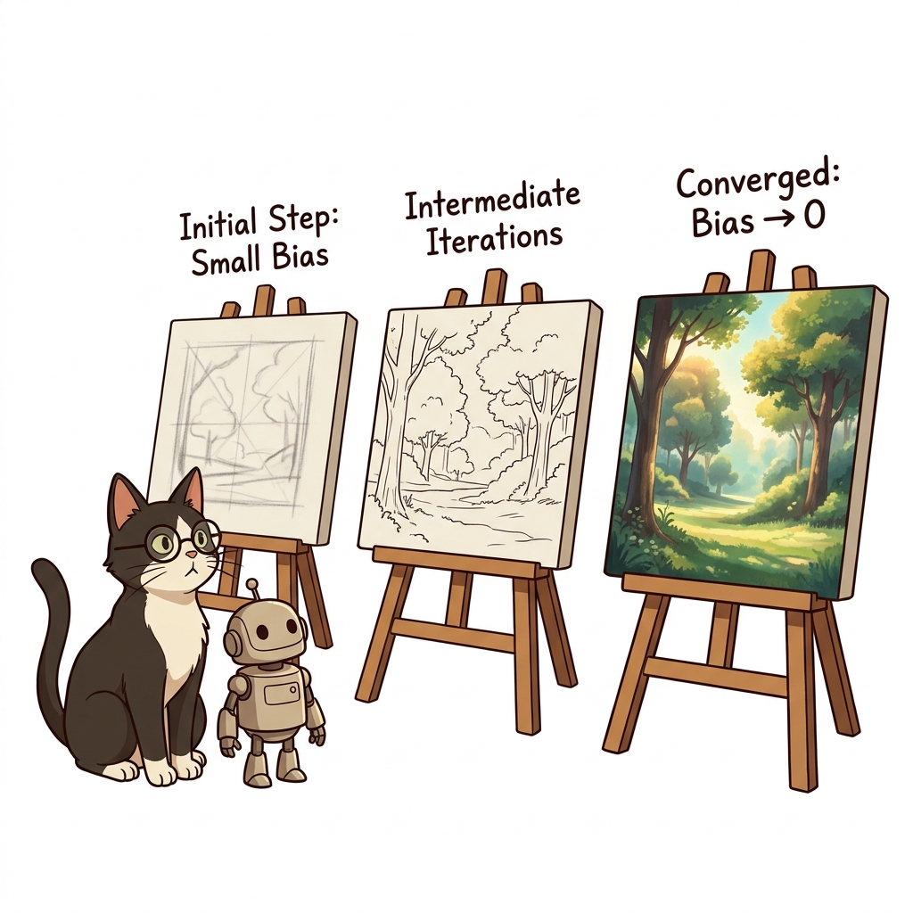
그림 10-1-29 초기 스케치의 거친 오차(초기 편향)가 학습이 반복될수록 자가 교정되어 완전한 명화(참값)로 수렴해가는 3단계 변화[강의 스크립트] 반면 TD법은 어떻습니까? TD 목표에 들어가는 $V(S_{t+1})$는 참 가치가 아닙니다. 학습 초기에 0이나 임의의 숫자로 채워 넣은 거친 스케치에 불과합니다. 틀린 숫자를 바탕으로 내 가치를 고치니, 당연히 학습 초기에는 구조적인 오차, 즉 편향(Bias)이 존재할 수밖에 없습니다. 하지만 놀랍게도 벨만 연산자의 축약 사상(Contraction Mapping) 원리에 의해, 갱신이 반복될수록 $V$ 값들은 상호 교정되며 참 가치를 향해 점진적으로 수렴해 갑니다. 그림 10-1-29처럼 거친 스케치가 자가 교정을 거치며 점차 완벽한 명화로 변모하는 것입니다.
대부분의 실세계 강화학습 문제에서는 “약간의 초기 편향을 감수하더라도 분산이 훨씬 작은 TD법”이 훨씬 적은 데이터로도 압도적으로 빠르게 참 가치에 수렴합니다!
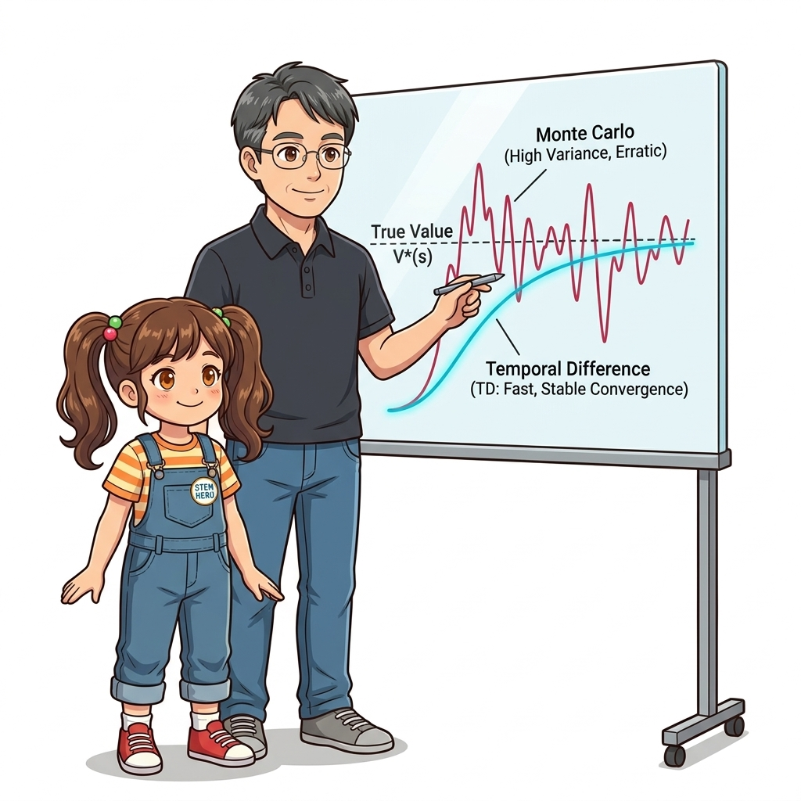
그림 10-1-30 학습이 반복됨에 따라 초기 편향이 0으로 사르르 소멸하며 참값에 신속하고 안정적으로 수렴하는 TD 학습 곡선[강의 스크립트] 머신러닝의 실무적 진리를 한 문장으로 요약하면 이 슬라이드와 같습니다. 무편향이지만 분산이 너무 커서 참값에 도달하려면 수백만 개의 에피소드를 쏟아부어야 하는 MC보다, 약간의 초기 편향을 감수하더라도 분산이 극도로 작아 몇 번의 에피소드만으로도 참값 근처로 빠르게 안정 수렴하는 TD법이 실전 문제에서 압도적으로 강력합니다. 실제 딥러닝과 결합된 현대 강화학습 알고리즘들이 대부분 TD의 변형인 이유가 바로 이 수렴 속도의 차이 때문입니다.
10.1.3 TD 정책 평가 에이전트 구현
이제 파이썬으로 TD 정책 평가를 수행하는 TdAgent 클래스를 구현해 보겠습니다.
그림 10-1-31 무거운 메모리 가방(memory = [])을 던져버리고 매 스텝 실시간으로 가볍게 달리는 초경량 TdAgent의 파이썬 구현
[강의 스크립트] 이론적 토대를 탄탄히 다졌으니, 이제 파이썬 코드로 들어가 보겠습니다. 9장에서 구현했던
McAgent를 기억해 보십시오. 에피소드가 진행되는 내내 경험 데이터를 무거운 메모리 가방(self.memory = [])에 잔뜩 쑤셔 넣고 다녀야 했습니다. 오늘 우리가 구현할TdAgent는 그 무거운 가방을 과감히 쓰레기통에 던져버립니다. 메모리 버퍼 없이 매 스텝 가볍게 달리는 초경량 에이전트의 구조를 직접 확인해 봅시다.
상, 하, 좌, 우 4방향으로 25%씩 무작위로 이동하는 에이전트를 작성합니다.
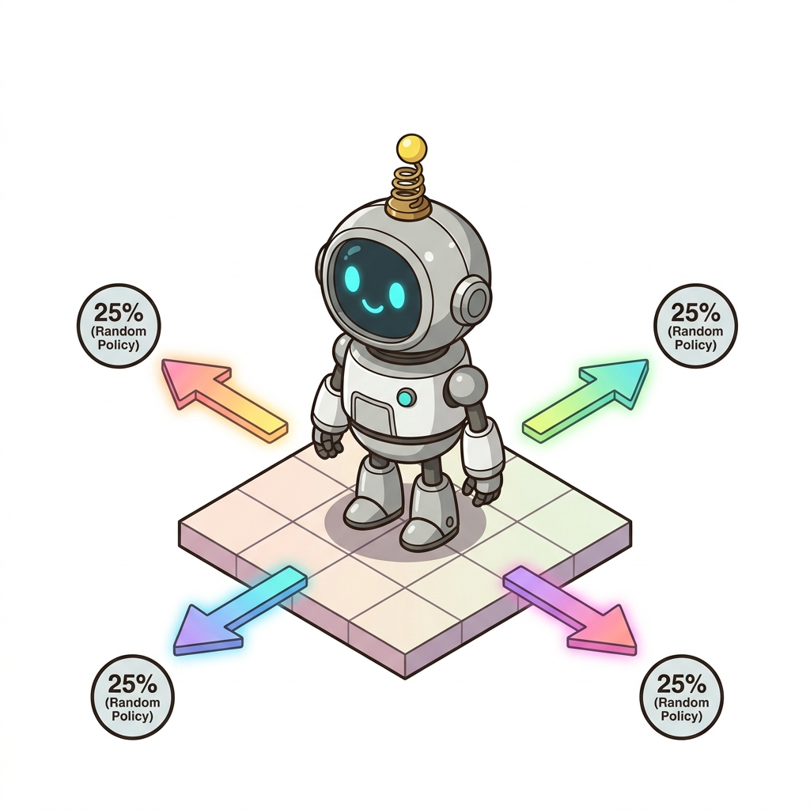
그림 10-1-32 3D 격자 타일 위에서 상, 하, 좌, 우 각 25%의 균등 확률로 이동하며 탐색하는 무작위 정책 에이전트 틴맨[강의 스크립트] 우리가 이번 절에서 가치를 평가하고자 하는 대상 정책 $\pi$는 상, 하, 좌, 우 4방향으로 각각 25%의 동일한 확률로 이동하는 균등 무작위 정책(Uniform Random Policy)입니다. 정책 평가(Policy Evaluation)의 본질은 주어진 정책이 얼마나 좋은지를 객관적으로 측정하는 작업입니다. 에이전트가 어떤 상태에 있을 때 이 엉성한 무작위 정책을 따르면 미래에 얼마만큼의 가치를 얻게 될지를 계산해 낼 것입니다.
TdAgent 클래스 구조 (1/2): 초기화 및 행동 선택
from collections import defaultdict
import numpy as np
class TdAgent:
def __init__(self):
self.gamma = 0.9 # 할인율 γ
self.alpha = 0.01 # TD 학습률 α (0.01)
self.action_size = 4 # 상, 하, 좌, 우 4가지 행동
random_actions = {0: 0.25, 1: 0.25, 2: 0.25, 3: 0.25}
self.pi = defaultdict(lambda: random_actions)
self.V = defaultdict(lambda: 0) # 상태 가치 함수 V(s) 테이블
def get_action(self, state):
action_probs = self.pi[state]
actions = list(action_probs.keys())
probs = list(action_probs.values())
return np.random.choice(actions, p=probs)
[강의 스크립트]
TdAgent클래스의 전반부 구조입니다. 생성자__init__에서는 할인율 감마를 0.9, 학습률 알파를 0.01로 설정합니다. 상태 가치 함수 테이블self.V는 파이썬의defaultdict를 사용하여 처음 방문하는 상태의 초기 가치를 0으로 자동 할당합니다.get_action메서드는 주어진 상태에서 정책self.pi의 확률 분포를 조회하여 넘파이 랜덤 초이스로 주사위를 굴려 다음 행동을 선택합니다.
TdAgent 클래스 구조 (2/2): eval() 실시간 가치 평가 메서드
class TdAgent:
# (앞선 초기화 및 get_action에 이어 계속)
def eval(self, state, reward, next_state, done):
# ❶ 종료 상태(Goal/Trap)의 가치 함수는 정의상 항상 0!
next_V = 0 if done else self.V[next_state]
# ❷ TD 목표 계산: R + γ * V(S_{t+1})
target = reward + self.gamma * next_V
# ❸ TD 오차를 이용한 즉시 가치 갱신: V(s) ← V(s) + α * (target - V(s))
self.V[state] += (target - self.V[state]) * self.alpha
[강의 스크립트]
TdAgent클래스의 심장부인eval()메서드를 보십시오. 첫째 줄에서는 다음 상태가 종단 상태인지를 검사하여, 종료 상태라면 가치를 0으로 확정하고 일반 상태라면 현재의 추정 가치를 가져옵니다. 둘째 줄에서는 즉각 보상과 감마가 곱해진 미래 가치 추정치를 더해 TD 목표를 산출합니다. 마지막 셋째 줄에서는 타깃과 현재 가치의 차이인 TD 오차에 학습률 알파를 곱해 현재 상태의 가치를 제자리에서 즉시 갱신합니다. 단 세 줄로 실시간 부트스트랩이 완벽히 구현되었습니다.
1) eval() 메서드 한 줄 한 줄 돋보기
코드를 한 줄 한 줄 분해하여 체계적으로 살펴봅시다.
그림 10-1-33 eval() 메서드의 4대 핵심 라인이 레고 블록처럼 유기적으로 맞물려 가치를 즉각 갱신하는 코드 해부도
[강의 스크립트]
eval()메서드의 4대 라인을 레고 블록처럼 분해하여 현미경으로 관찰해 보겠습니다. 전달 인자 정의부터 종료 상태의 경계 조건 처리, TD 목표 조립, 그리고 최종 점화식 적용까지 각 라인이 수학 공식과 어떻게 1:1로 대응되는지 확인해 봅시다.
eval(self, state, reward, next_state, done)의 매개변수:state(St): 행동을 취하기 직전의 현재 상태 좌표입니다.reward(Rt): 행동 직후 환경으로부터 즉시 획득한 보상입니다.next_state(St+1): 에이전트가 새롭게 도달한 다음 상태 좌표입니다.done: 에피소드가 종료되었는지 여부(True/False) 플래그입니다.
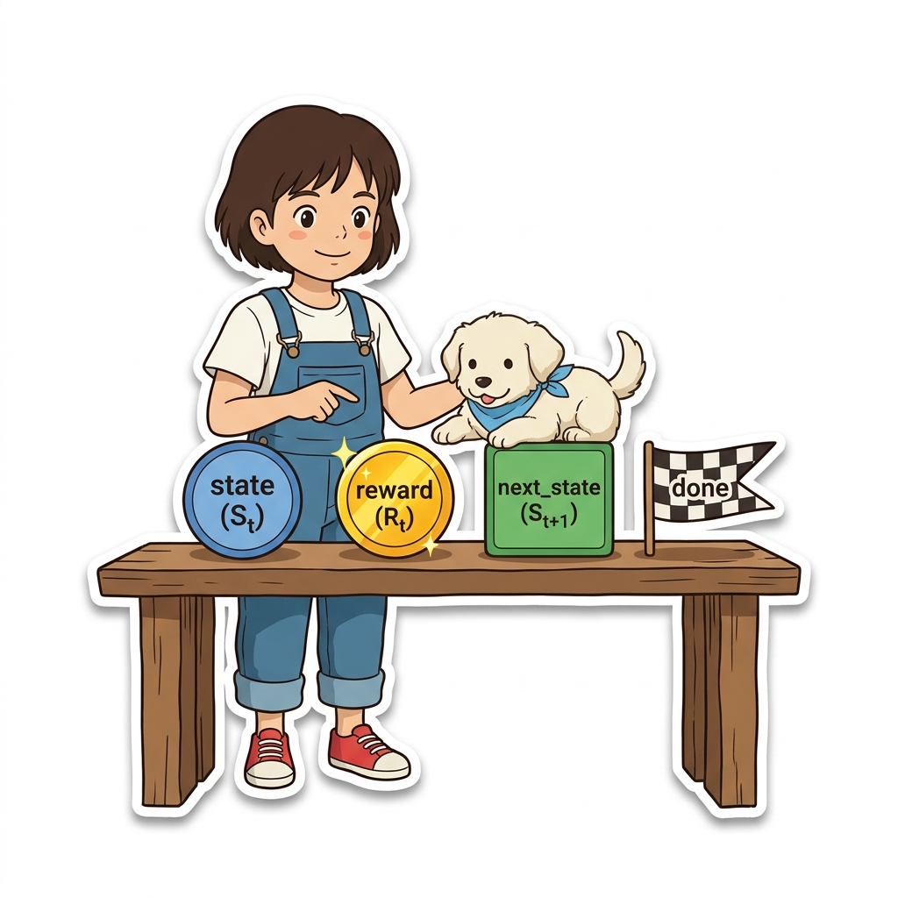
그림 10-1-34eval() 함수의 4대 핵심 전달 인자인 state, reward, next_state, done 카드를 도로시가 펼쳐 보여주는 해설
[강의 스크립트]
eval()함수의 인터페이스를 보십시오. 네 개의 인자를 전달받습니다:state,reward,next_state,done. 이것은 에이전트가 환경과 한 번 상호작용하여 얻어낸 가장 순수한 전이 튜플 $(S_t, R_t, S_{t+1}, \text{done})$입니다. 과거의 긴 이력도 필요 없고, 미래의 계획도 필요 없습니다. 오직 직전 상태와 지금 상태, 그리고 그 사이에서 발생한 보상 하나면 갱신에 필요한 모든 준비가 끝납니다.
next_V = 0 if done else self.V[next_state]:- 만약 목표 지점(골 또는 함정)에 도달하여 게임이 끝났다면(
done == True), 더 이상 미래에 얻을 보상이 없으므로 종료 상태의 참 가치는 항상 0입니다. - 게임이 계속 진행 중이라면 테이블에서 다음 상태의 현재 추정치
self.V[next_state]를 부트스트랩하여 가져옵니다.
- 만약 목표 지점(골 또는 함정)에 도달하여 게임이 끝났다면(
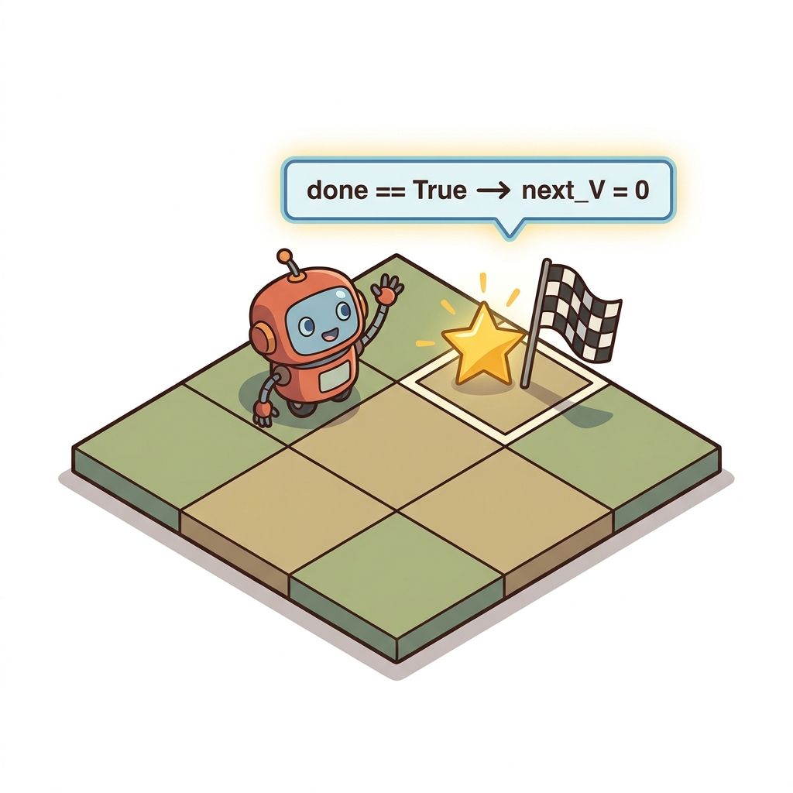
그림 10-1-35 게임 종료(done == True) 시 더 이상의 미래 보상이 존재하지 않아 남은 가치 next_V가 정확히 0이 되는 원리
[강의 스크립트] 이 코드는 강화학습을 구현할 때 학생들이 가장 빈번하게 버그를 내는 부분입니다. 별표를 세 개 쳐두셔야 합니다. 만약 골이나 함정에 도착해서 에피소드가 끝났다면(
done == True), 그 종료 상태의 가치는 정의상 무조건 0이어야 합니다. 왜 그렇습니까? 게임이 끝났는데 다음 미래에 얻을 수 있는 보상이 어디 있겠습니까? 미래 보상이 전혀 없으므로 종료 상태의 가치는 정확히 0입니다. 따라서 삼항 연산자를 써서done이 참이면 0을 넣고, 게임이 진행 중일 때만 테이블에서 다음 상태의 가치self.V[next_state]를 가져옵니다. 벨만 방정식의 경계 조건(Boundary Condition)을 코드로 정확히 구현한 것입니다.
target = reward + self.gamma * next_V:- [식 10.8]의 TD 목표 (Rt + γV(St+1))를 계산합니다.
- 방금 획득한 즉시 보상과 미래의 할인된 추정 가치를 결합하여 새로운 기준점을 형성합니다.
그림 10-1-36 작업대에서 즉시 보상 동전 $R_t$와 할인된 다음 가치 구슬 $\gamma V(S_{t+1})$을 결합해 TD 목표 기준판을 조립하는 지니와 틴맨
[강의 스크립트] 두 번째 줄인
target = reward + self.gamma * next_V입니다. 방금 우리가 배운 TD 목표 수식 $R_t + \gamma V(S_{t+1})$를 파이썬으로 그대로 옮겨 적은 것입니다. 방금 손에 쥔 확실한 보상reward에, 할인율 감마가 곱해진 미래의 추정 가치next_V를 더해 새로운 목표 기준점을 조립해 냅니다. 지도학습으로 치면 레이블(Label, 정답값) 역할을 하는 변수입니다.
self.V[state] += (target - self.V[state]) * self.alpha:- TD 오차
(target - self.V[state])에 학습률self.alpha를 곱해 현재 상태의 가치를 즉각 갱신합니다. - 한 걸음 내딛을 때마다 오차 신호의 크기에 비례하여 가치를 실시간으로 보정합니다.
- TD 오차
그림 10-1-37 학습률 $\alpha=0.01$ 다이얼을 미세 조정하여 현재 가치를 TD 목표 방향으로 부드럽게 한 걸음 당겨주는 도로시와 지니
[강의 스크립트] 마지막 줄입니다. 실질적인 가치 갱신이 일어나는 점화식입니다.
(target - self.V[state])가 바로 TD 오차 $\delta_t$입니다. 내가 새로 조립한 목표치와 기존에 믿고 있던 가치 사이의 간격이지요. 여기에 학습률 알파 0.01을 곱해서 기존 가치에 누적합(+=) 해줍니다. 목표치가 더 크면 가치가 상향 조정되고, 목표치가 더 작으면 가치가 하향 조정됩니다. 오차 신호의 부호와 크기에 맞춰 정밀하게 보정되는 것입니다.
[!NOTE] 💡 MC법과 코드 구조의 결정적 차이!
9장에서 구현한McAgent는 에피소드가 진행되는 동안self.memory.append(data)로 경험을 가방 속에 계속 담아두었다가, 에피소드가 완전히 끝났을 때 비로소eval()을 딱 한 번 호출했습니다.
하지만TdAgent는 경험을 저장하는memory리스트가 아예 없습니다! 한 걸음 내딛자마자 그 자리에서 즉시eval()을 호출하여 가치를 갱신해 버리므로, 메모리를 전혀 차지하지 않는 초경량 실시간 학습이 가능합니다.
[강의 스크립트] 슬라이드의 노트를 주의 깊게 보십시오. 시스템 설계 관점에서 MC와 TD의 결정적인 차이가 바로 여기에 있습니다.
McAgent는 에피소드가 1,000 스텝이면 1,000개의 튜플을memory배열에 계속해서 쌓아두어야 했습니다. 에피소드가 길어지거나 고차원 환경이 되면 메모리가 기하급수적으로 소모됩니다. 하지만TdAgent를 보십시오.memory라는 변수 자체가 아예 선언조치 되어 있지 않습니다. 한 걸음 내딛자마자 즉시 소화하고 털어버립니다. 이것이 바로 임베디드 장비나 실시간 로보틱스에서 TD 계열 알고리즘이 독보적으로 사용되는 엔지니어링적 이유입니다.
2) 전체 학습 스크립트 실행 (1,000 에피소드 실시간 상호작용)
이제 GridWorld 환경과 TdAgent를 연결하여 1,000번의 에피소드를 실행해 봅시다:
 그림 10-1-38 틴맨 로봇이 그리드월드 발판을 밟을 때마다 번개(⚡)처럼 즉시 가치가 실시간으로 갱신되는 1,000 에피소드 루프
그림 10-1-38 틴맨 로봇이 그리드월드 발판을 밟을 때마다 번개(⚡)처럼 즉시 가치가 실시간으로 갱신되는 1,000 에피소드 루프
[강의 스크립트] 이제 이 에이전트를 우리가 계속 사용해 온 3x4 그리드월드 환경에 투입해 보겠습니다. 에피소드를 총 1,000번 수행하며 에이전트와 환경이 실시간으로 어떻게 맞물려 돌아가는지 메인 실행 스크립트의 구조를 살펴보겠습니다.
from common.gridworld import GridWorld
env = GridWorld()
agent = TdAgent()
episodes = 1000
for episode in range(episodes):
state = env.reset()
while True:
action = agent.get_action(state)
next_state, reward, done = env.step(action)
# ⚡ 한 걸음 걸을 때마다 즉시 가치 함수 평가 갱신!
agent.eval(state, reward, next_state, done)
if done:
break
state = next_state
# 학습 완료 후 최종 수렴된 상태 가치 함수 시각화
env.render_v(agent.V)
[강의 스크립트] 메인 루프 코드를 보십시오.
for episode in range(episodes):안에서 환경을 초기화하고while True:루프로 진입합니다. 가장 주목하셔야 할 코드는 바로env.step(action)바로 밑에 있는agent.eval(state, reward, next_state, done)입니다. MC에서는eval()이while루프 바깥, 즉 에피소드가 다 끝난 다음에 딱 한 번 위치했었습니다. 하지만 TD에서는while루프 내부에서step()이 불릴 때마다 매 순간 호출됩니다. 발을 딛는 즉시 가치가 수정되는 실시간 온라인 학습 루프의 전형적인 모습입니다.
3) TD법으로 평가한 가치 함수 히트맵 결과
스크립트를 실행하면 화면에 다음과 같은 가치 함수 히트맵 격자가 렌더링됩니다:
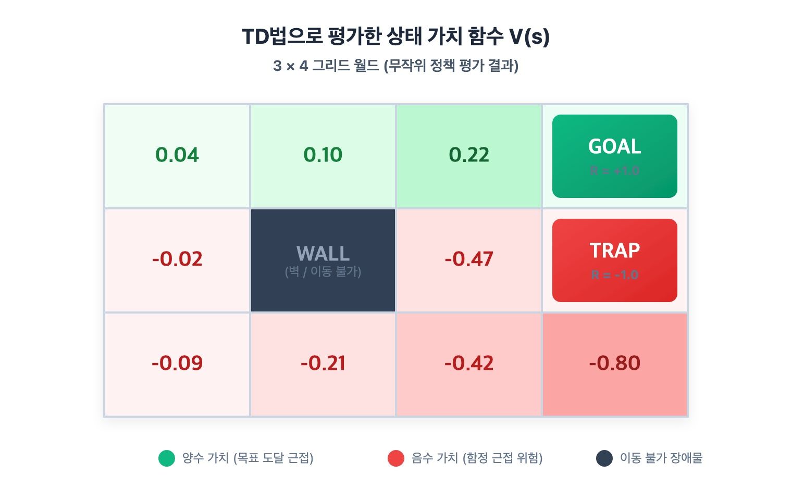
그림 10-1-39 3 × 4 그리드 월드에서 TD법(1,000회 에피소드)으로 평가한 무작위 정책의 상태 가치 함수 V(s)[강의 스크립트] 1,000회의 에피소드를 모두 마치고 렌더링된 3x4 그리드월드의 상태 가치 함수 히트맵 결과입니다. 그림 10-1-39의 각 칸에 적힌 숫자들을 자세히 들여다보십시오. 이 숫자들은 에이전트가 어떤 사전 지식도 없이, 오직 한 걸음씩 걸으며 수집한 1스텝 오차 신호만으로 학습해 낸 결과물입니다. 이 히트맵이 어떤 물리적 지형도를 형성하고 있는지 분석해 보겠습니다.
결과 지도를 살펴봅시다:
- 플러스 골 지점(
(0, 3), 보상 +1.0)에 가까운 위쪽 칸들(0.22,0.10,0.04)은 밝은 초록색의 높은 양수 가치를 띱니다. - 마이너스 함정 지점(
(1, 3), 보상 -1.0)에 가까운 아래쪽 칸들(-0.80,-0.42,-0.47)은 짙은 붉은색의 음수 가치를 띱니다. - 환경 모델(전이 확률과 보상 함수)을 전혀 모르고, 에피소드 완주를 기다리는 지연 정산도 없이, 오직 매 순간 한 걸음씩 밟으며 TD 오차를 갱신했을 뿐인데도 환경의 공간적 참 가치 지도가 놀랍도록 정확하게 완성되었습니다!
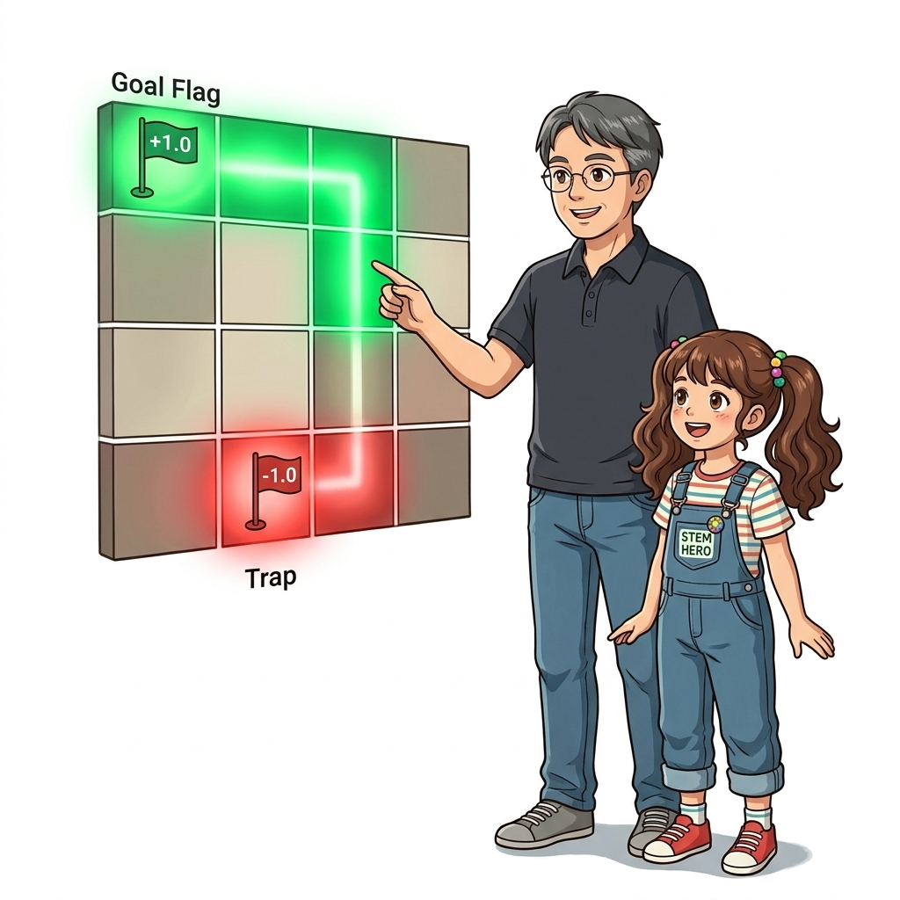
그림 10-1-40 3×4 그리드월드 가치 지형도에서 +1.0 골을 향한 오르막길과 -1.0 함정을 피하는 안전한 가치 등고선을 설명하시는 이호진 교수님[강의 스크립트] 히트맵의 구배(Gradient)를 관찰해 보십시오. 우측 상단의 +1.0 골 지점으로 다가갈수록 숫자가 0.04, 0.10, 0.22로 점진적으로 높아지며 밝은 초록색의 완만한 오르막 능선을 형성합니다. 반대로 그 바로 아래에 있는 -1.0 함정 주변은 -0.42, -0.47, -0.80으로 깊은 음수 분화구를 이루며 붉게 물들어 있습니다. 에이전트는 환경의 미로 구조나 보상이 어디 배치되어 있는지 사전에 전혀 몰랐습니다. 끝까지 달려가서 정산하지도 않았습니다. 오직 매 순간 한 걸음씩 내딛으며 TD 오차를 갱신했을 뿐인데, 공간 전체에 걸쳐 완벽하고 정교한 가치 등고선이 완성된 것입니다. 이것이 바로 시간차 학습이 보여주는 경이로운 수렴 능력입니다.
10.1.4 핵심 정리: TD 정책 평가 3대 핵심 기둥
그림 10-1-41 TD 정책 평가 3대 금자탑 기념비와 10.2 SARSA 최적 정책 제어로의 출항 피날레
[강의 스크립트] 오늘 강의의 대미를 장식하며, 우리가 세운 TD 정책 평가의 세 가지 핵심 기념비를 정리하겠습니다. 이 세 가지 기둥은 여러분이 앞으로 고급 강화학습이나 심층 강화학습을 연구할 때 언제나 되돌아와야 하는 불변의 원리입니다.
- DP와 MC의 하이브리드 결합:
- MC처럼 환경 모델 없이 1-스텝 샘플 데이터만으로 학습하며, DP처럼 다음 상태의 추정 가치를 부트스트랩하여 실시간 갱신합니다.
- TD 목표와 TD 오차:
- 현재 예측치 V(St)를 1단계 미래의 더 신뢰할 수 있는 기준점인 TD 목표 Rt + γV(St+1) 방향으로 오차 신호만큼 당겨서 갱신합니다.
- 낮은 분산과 실시간 온라인 학습:
- 장기 누적 수익 Gt 대신 1스텝 앞의 데이터만을 참조하므로 분산이 매우 작아 수렴이 안정적이며, 에피소드가 끝나지 않는 지속적 과제에도 완벽하게 적용할 수 있습니다.
[강의 스크립트] 세 가지 핵심을 다시 마음에 새기십시오. 첫째, TD는 모델 프리라는 MC의 장점과 부트스트랩이라는 DP의 장점을 결합한 하이브리드 기법입니다. 둘째, 학습의 나침반은 $R_t + \gamma V(S_{t+1})$라는 TD 목표와 현재 예측치 사이의 괴리인 TD 오차 $\delta_t$입니다. 셋째, 1스텝 앞만 바라보기 때문에 장기적인 무작위성이 개입하지 않아 분산이 대단히 낮고, 에피소드가 끝나지 않는 지속적 환경에서도 실시간 온라인 학습이 가능합니다.
그림 10-1-42 바둑판에서 돌을 한 수 놓자마자 계가를 기다리지 않고 판세를 즉각 재평가하는 시간차 학습의 본질을 전수하시는 이호진 교수님
👨🏫 이호진 교수님의 직강 노트:
“TD법의 진정한 위력은 ‘기다리지 않는 성격’에 있습니다. 바둑을 둘 때 대국이 완전히 끝나 계가를 마칠 때까지 기다리는 것이 몬테카를로법이라면, 돌을 한 수 놓자마자 판세를 즉시 재평가하는 것이 바로 시간차 학습(TD)입니다. 이 놀라운 평가 방식을 행동 가치 Q 함수와 정책 개선에 결합하면, 마침내 스스로 최적의 수를 두는 SARSA와 Q-러닝이라는 전설적인 제어 알고리즘이 탄생하게 됩니다!”
[강의 스크립트] 마지막으로 시간차 학습의 본질을 바둑에 비유해 보겠습니다. 바둑을 둘 때 300수를 다 두고 대국이 완전히 끝난 뒤에 계가를 거쳐 “내가 이겼구나, 졌구나”를 따지는 것이 몬테카를로 방식입니다. 반면에 프로 기사들이나 알파고처럼, 돌을 판 위에 딱 한 수 놓는 순간 “아, 이 수로 인해 나의 형세가 2% 유리해졌구나”라고 즉각적으로 판세를 재평가하는 것이 바로 시간차 학습(TD)입니다. 이제 우리는 가치를 평가하는 법을 배웠습니다. 그렇다면 다음 질문은 당연히 이것이어야 합니다: “이 평가 방식을 바탕으로 에이전트가 어떻게 스스로 최선의 수를 찾아 움직이게 만들 것인가?”
그림 10-1-43 ‘Next: 10.2 SARSA!’ 깃발을 힘차게 흔들며 다음 챕터로 신나게 함께 전진하는 지니와 도로시 탐험대
🐱 조교 지니의 응원 노트:
“도로시와 여러분, 한 걸음 걸을 때마다 번개처럼 가치를 업그레이드하는 TD법의 짜릿함을 느끼셨나요? 이제 배낭에 경험을 무겁게 모아둘 필요 없이, 발을 딛는 즉시 깨달음을 얻을 수 있어요! 다음 10.2절에서는 이 TD법을 행동 가치 함수 Q에 적용해 에이전트가 스스로 움직임을 제어하는 SARSA를 만나봅시다냥!”
[강의 스크립트] 다음 10.2절에서는 오늘 배운 상태 가치 $V(s)$의 시간차 갱신 원리를 행동 가치 함수인 $Q(s, a)$로 확장할 것입니다. 상태 $s$에서 행동 $a$를 취하고 보상 $r$을 얻은 뒤 다음 상태 $s’$에서 다음 행동 $a’$를 선택하는 연쇄 고리, 즉 $S, A, R, S, A$의 머리글자를 딴 SARSA 제어 알고리즘을 통해 마침내 에이전트가 스스로 최적의 길을 찾아 항해하는 제어의 세계로 나아가겠습니다. 수고하셨습니다.